MITDB_105_BENEFIT_ap00873
优势｜RR规则删除底层FP · 最近专家标注前超过150ms
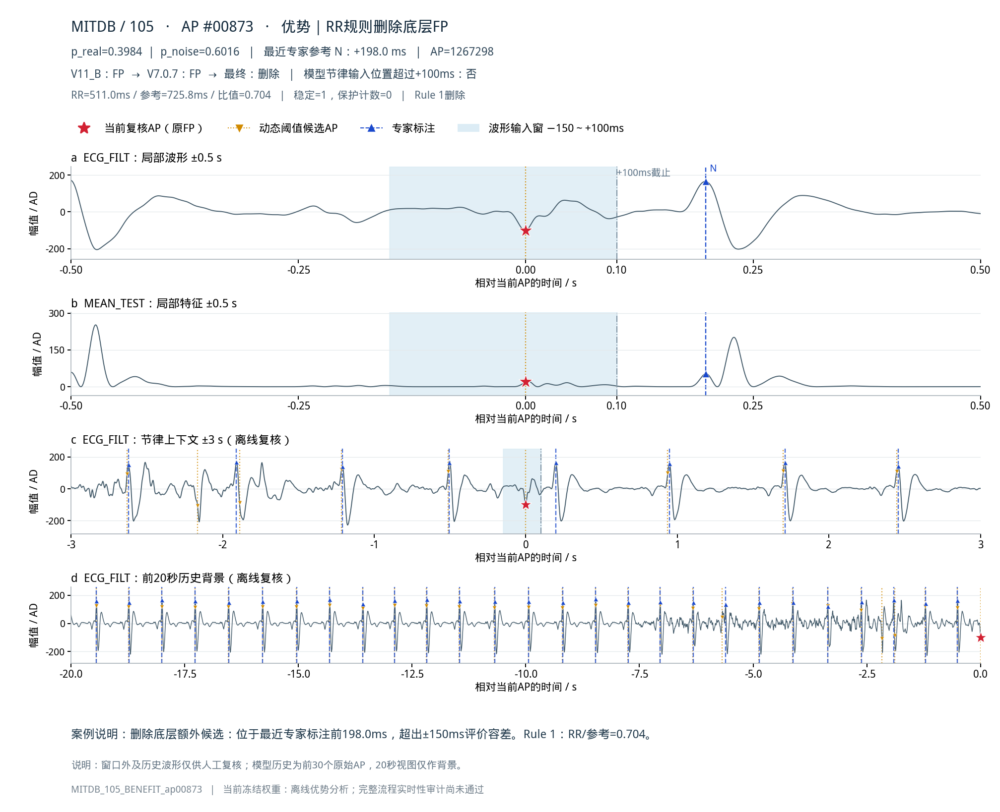
当前AP在底层为FP，位于最近专家参考标注前198.0ms，超出±150ms评价容差。模型以p_real=0.3984保留，随后Rule 1删除；RR=511.0ms，参考RR=725.8ms，比值=0.704，历史稳定=1、cooldown=0。
MITDB_105_BENEFIT_ap01205
优势｜RR规则删除底层FP · 最近专家标注前超过150ms
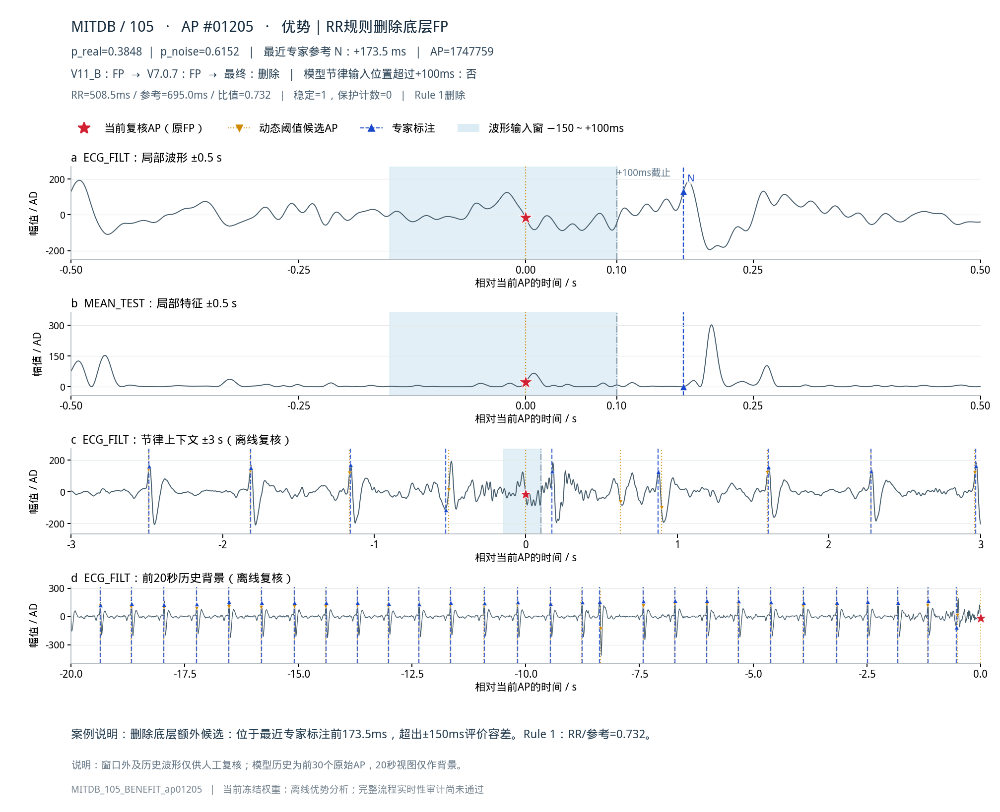
当前AP在底层为FP，位于最近专家参考标注前173.5ms，超出±150ms评价容差。模型以p_real=0.3848保留，随后Rule 1删除；RR=508.5ms，参考RR=695.0ms，比值=0.732，历史稳定=1、cooldown=0。
MITDB_105_BENEFIT_ap01206
优势｜模型删除底层FP · 最近专家标注前超过150ms
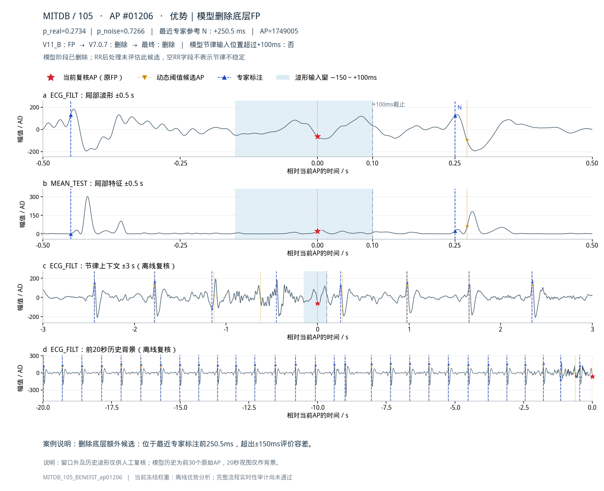
当前AP在底层为FP，位于最近专家参考标注前250.5ms，超出±150ms评价容差。模型p_real=0.2734、p_noise=0.7266，未通过原0.70噪声阈值；RR未评估此候选。
MITDB_105_BENEFIT_ap01476
优势｜模型删除底层FP · 最近专家标注前超过150ms
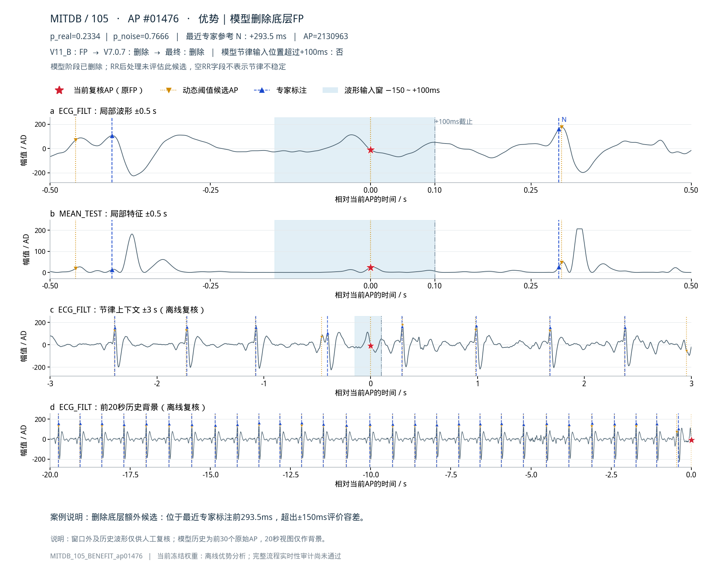
当前AP在底层为FP，位于最近专家参考标注前293.5ms，超出±150ms评价容差。模型p_real=0.2334、p_noise=0.7666，未通过原0.70噪声阈值；RR未评估此候选。
MITDB_105_BENEFIT_ap01664
优势｜RR规则删除底层FP · 最近专家标注后超过150ms
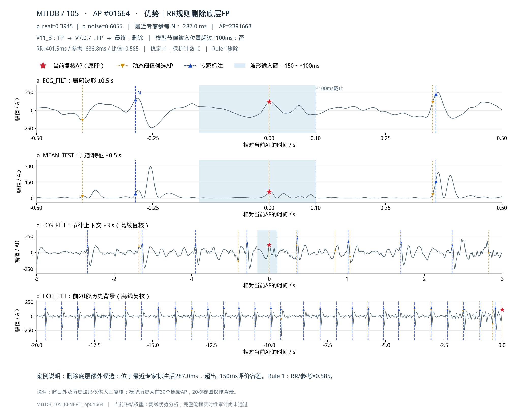
当前AP在底层为FP，位于最近专家参考标注后287.0ms，超出±150ms评价容差。模型以p_real=0.3945保留，随后Rule 1删除；RR=401.5ms，参考RR=686.8ms，比值=0.585，历史稳定=1、cooldown=0。
MITDB_105_BENEFIT_ap01666
优势｜RR规则删除底层FP · 最近专家标注前超过150ms
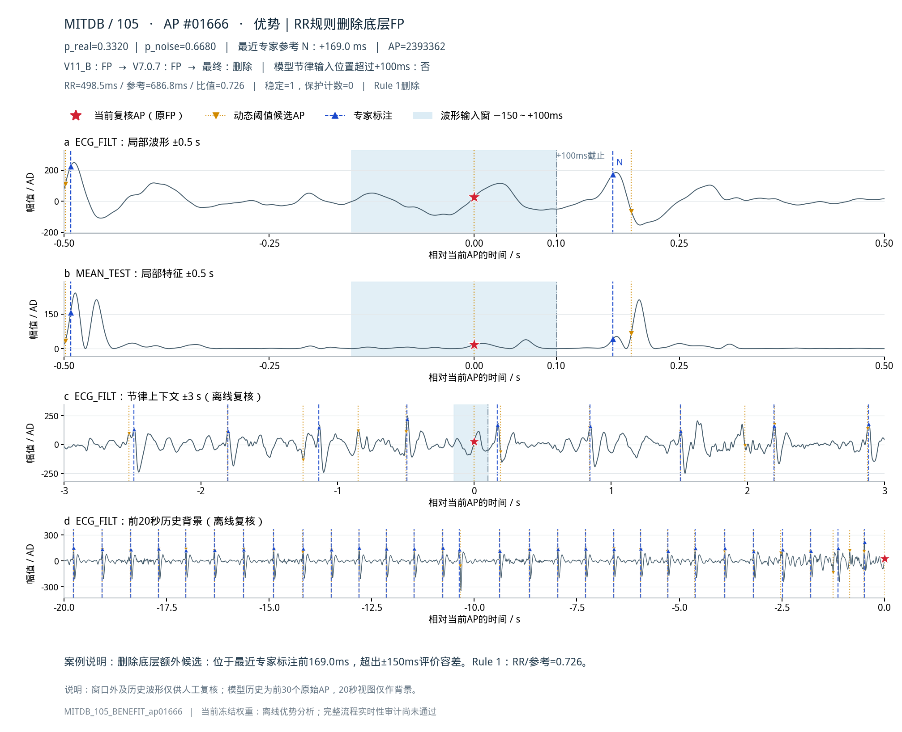
当前AP在底层为FP，位于最近专家参考标注前169.0ms，超出±150ms评价容差。模型以p_real=0.3320保留，随后Rule 1删除；RR=498.5ms，参考RR=686.8ms，比值=0.726，历史稳定=1、cooldown=0。
MITDB_105_BENEFIT_ap01670
优势｜RR规则删除底层FP · 最近专家标注前超过150ms
当前AP在底层为FP，位于最近专家参考标注前212.0ms，超出±150ms评价容差。模型以p_real=0.3867保留，随后Rule 1删除；RR=472.0ms，参考RR=680.8ms，比值=0.693，历史稳定=1、cooldown=0。
MITDB_105_BENEFIT_ap01688
优势｜模型删除底层FP · 最近专家标注前超过150ms
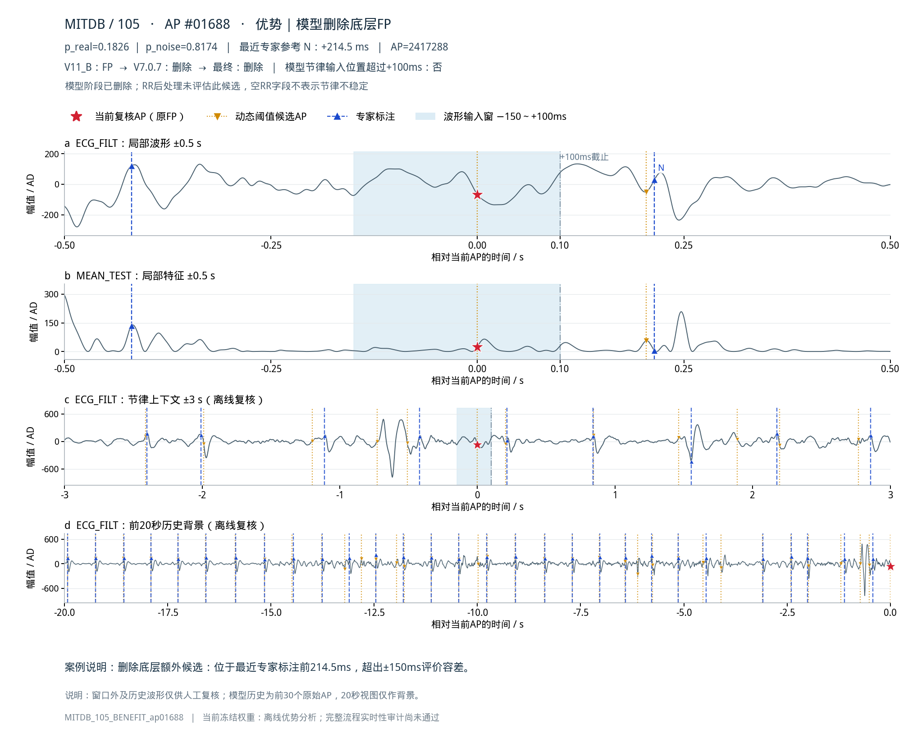
当前AP在底层为FP，位于最近专家参考标注前214.5ms，超出±150ms评价容差。模型p_real=0.1826、p_noise=0.8174，未通过原0.70噪声阈值；RR未评估此候选。
MITDB_105_BENEFIT_ap01692
优势｜模型删除底层FP · 最近专家标注前超过150ms
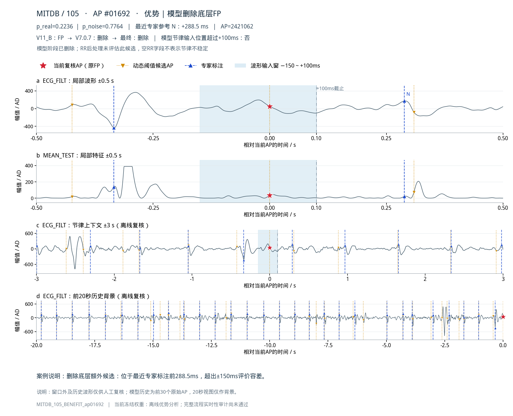
当前AP在底层为FP，位于最近专家参考标注前288.5ms，超出±150ms评价容差。模型p_real=0.2236、p_noise=0.7764，未通过原0.70噪声阈值；RR未评估此候选。
MITDB_105_BENEFIT_ap01701
优势｜模型删除底层FP · 最近专家标注后超过150ms
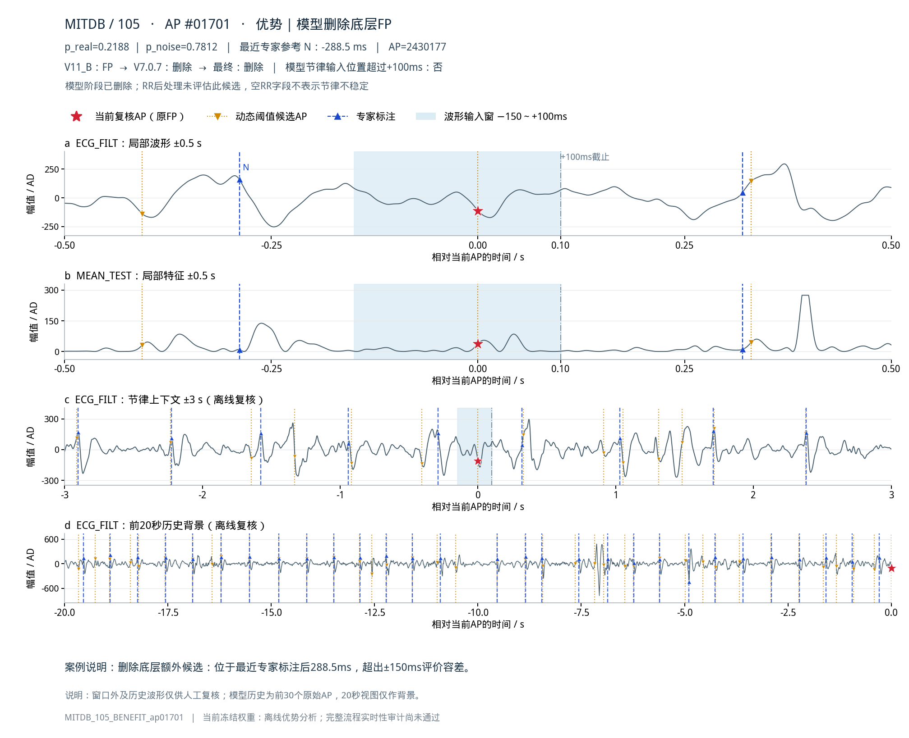
当前AP在底层为FP，位于最近专家参考标注后288.5ms，超出±150ms评价容差。模型p_real=0.2188、p_noise=0.7812，未通过原0.70噪声阈值；RR未评估此候选。
MITDB_105_BENEFIT_ap01704
优势｜FP重新匹配为TP（候选保留） · FP重新匹配为TP
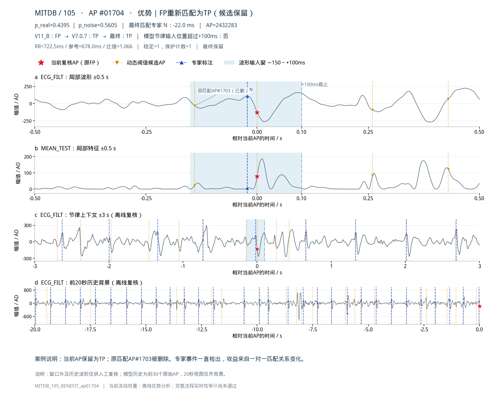
当前AP在底层被评价为FP，但未被模型或RR删除；原匹配AP#1703被模型删除后，当前AP以p_real=0.4395重新匹配专家事件1696（N，相对AP-22.0ms）。该专家事件在各阶段均检出，这是候选匹配变化，不是新增检出一个心搏。
MITDB_105_BENEFIT_ap01705
优势｜模型删除底层FP · 最近专家标注后超过150ms
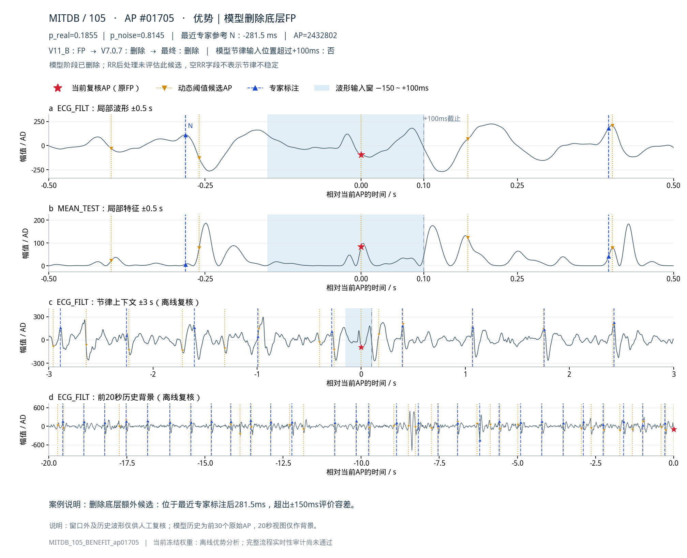
当前AP在底层为FP，位于最近专家参考标注后281.5ms，超出±150ms评价容差。模型p_real=0.1855、p_noise=0.8145，未通过原0.70噪声阈值；RR未评估此候选。
MITDB_105_BENEFIT_ap01706
优势｜模型删除底层FP · 最近专家标注前超过150ms
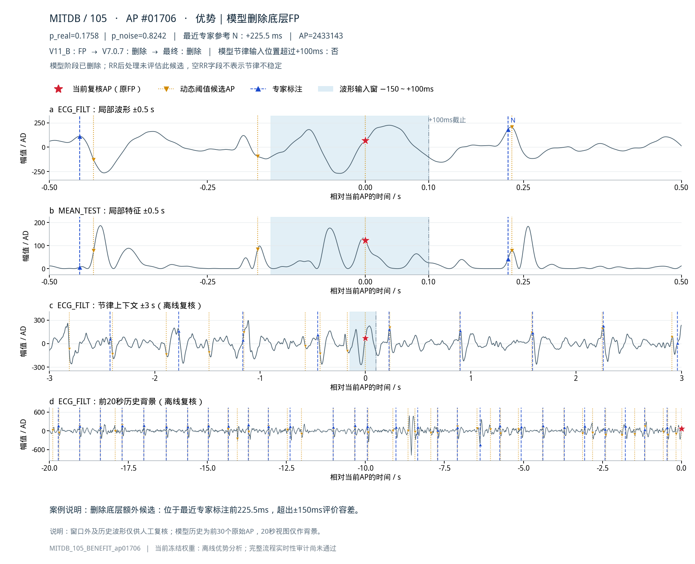
当前AP在底层为FP，位于最近专家参考标注前225.5ms，超出±150ms评价容差。模型p_real=0.1758、p_noise=0.8242，未通过原0.70噪声阈值；RR未评估此候选。
MITDB_105_BENEFIT_ap01713
优势｜模型删除底层FP · 最近专家标注前超过150ms
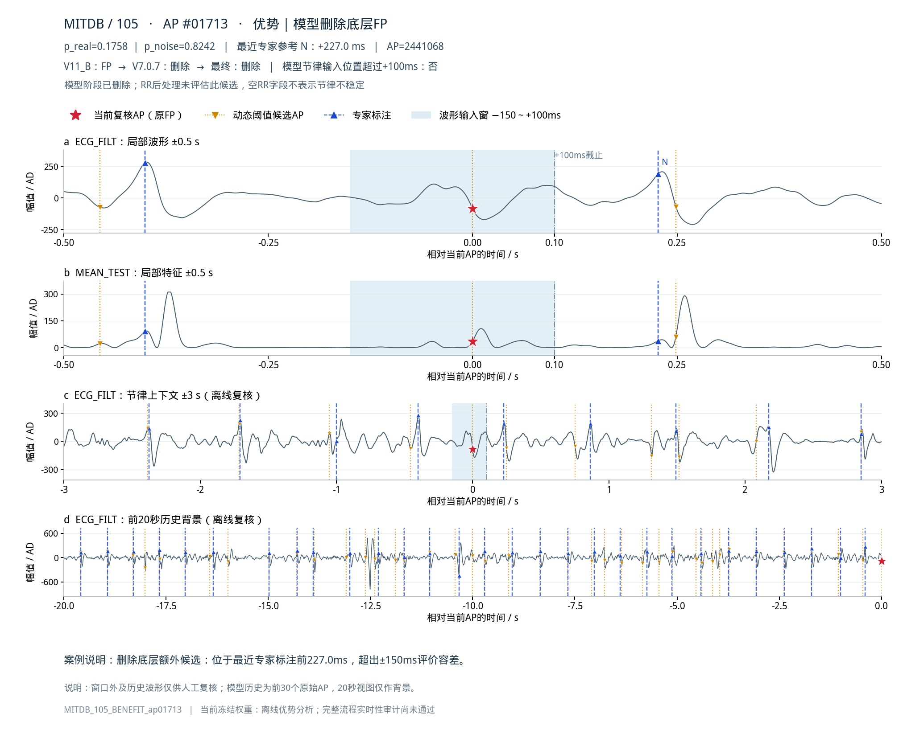
当前AP在底层为FP，位于最近专家参考标注前227.0ms，超出±150ms评价容差。模型p_real=0.1758、p_noise=0.8242，未通过原0.70噪声阈值；RR未评估此候选。
MITDB_105_BENEFIT_ap01724
优势｜RR规则删除底层FP · 最近专家标注后超过150ms
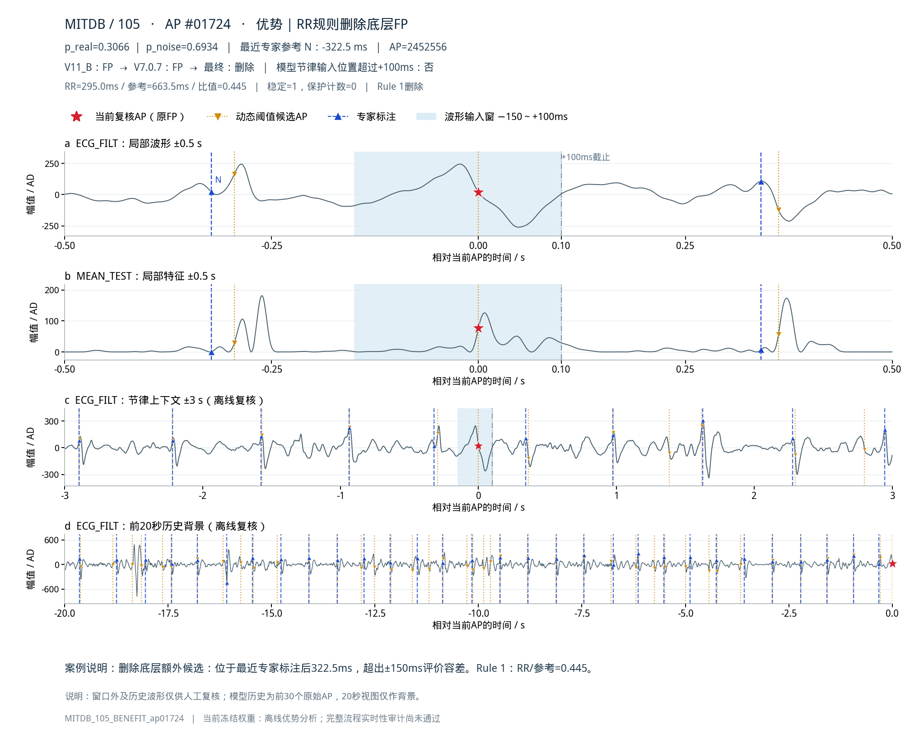
当前AP在底层为FP，位于最近专家参考标注后322.5ms，超出±150ms评价容差。模型以p_real=0.3066保留，随后Rule 1删除；RR=295.0ms，参考RR=663.5ms，比值=0.445，历史稳定=1、cooldown=0。
MITDB_105_BENEFIT_ap01727
优势｜模型删除底层FP · 最近专家标注前超过150ms
当前AP在底层为FP，位于最近专家参考标注前243.0ms，超出±150ms评价容差。模型p_real=0.1748、p_noise=0.8252，未通过原0.70噪声阈值；RR未评估此候选。
MITDB_105_BENEFIT_ap01732
优势｜模型删除底层FP · 最近专家标注前超过150ms
当前AP在底层为FP，位于最近专家参考标注前169.5ms，超出±150ms评价容差。模型p_real=0.1621、p_noise=0.8379，未通过原0.70噪声阈值；RR未评估此候选。
MITDB_105_BENEFIT_ap01737
优势｜RR规则删除底层FP · 最近专家标注前超过150ms
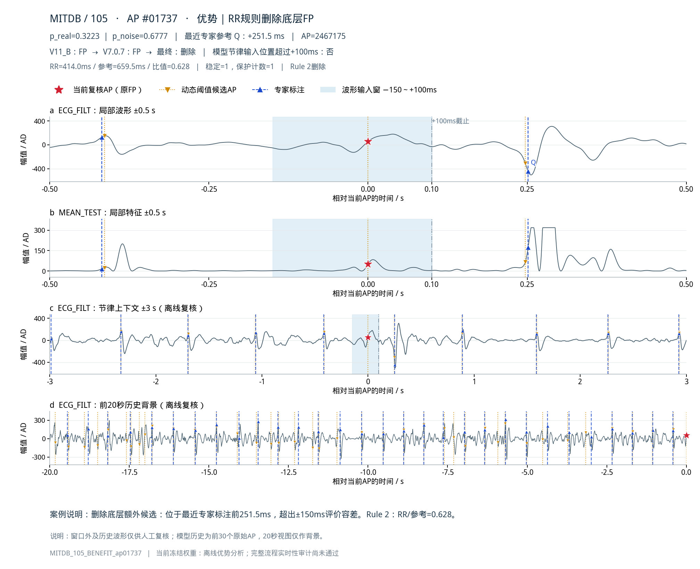
当前AP在底层为FP，位于最近专家参考标注前251.5ms，超出±150ms评价容差。模型以p_real=0.3223保留，随后Rule 2删除；RR=414.0ms，参考RR=659.5ms，比值=0.628，历史稳定=1、cooldown=1。此前3秒低置信AP数=2，前一保留概率减当前概率=0.369。
MITDB_105_BENEFIT_ap01755
优势｜模型删除底层FP · 最近专家标注前超过150ms
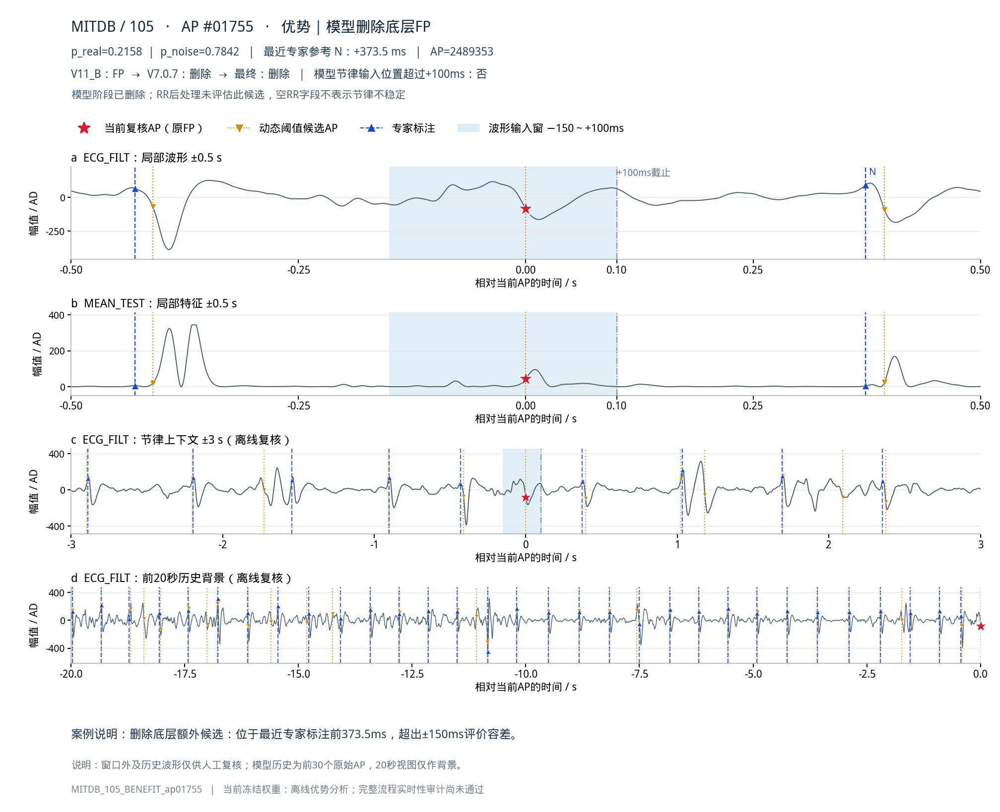
当前AP在底层为FP，位于最近专家参考标注前373.5ms，超出±150ms评价容差。模型p_real=0.2158、p_noise=0.7842，未通过原0.70噪声阈值；RR未评估此候选。
MITDB_105_BENEFIT_ap01758
优势｜RR规则删除底层FP · 容差内重复候选，专家事件仍检出
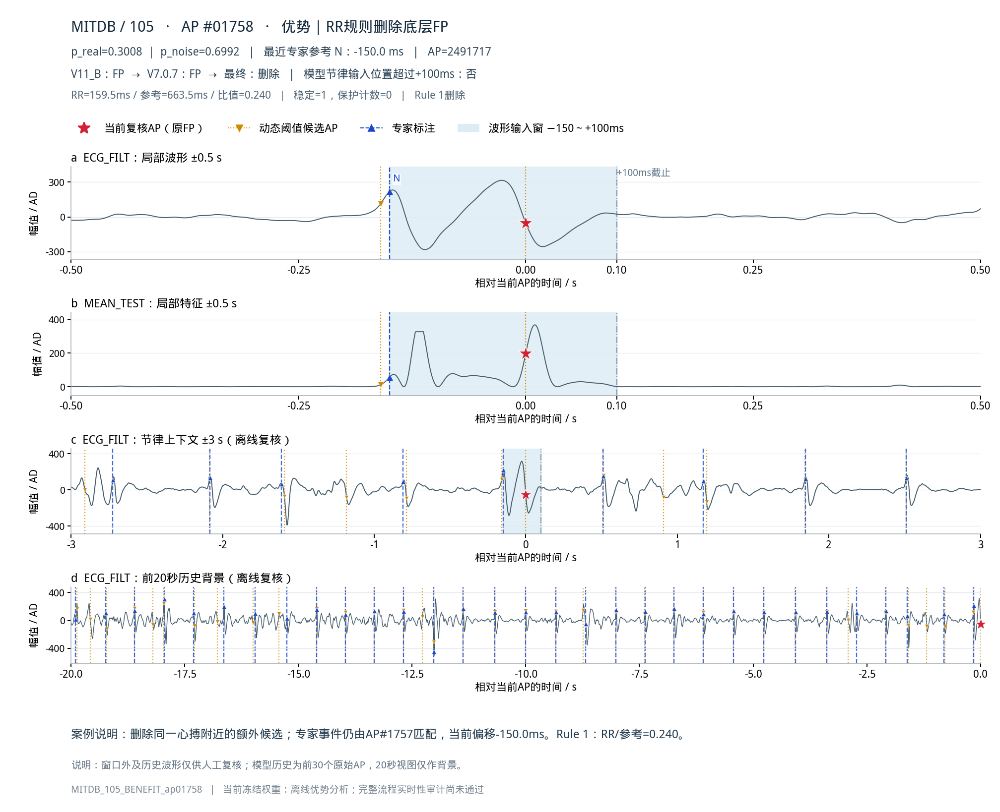
底层FP位于最近专家标注-150.0ms，在±150ms匹配容差内；该专家事件在底层已由AP#1757匹配。删除当前额外候选后，该专家事件仍由AP#1757检出。模型以p_real=0.3008保留，随后Rule 1删除；RR=159.5ms，参考RR=663.5ms，比值=0.240，历史稳定=1、cooldown=0。
MITDB_105_BENEFIT_ap01760
优势｜模型删除底层FP · 最近专家标注前超过150ms
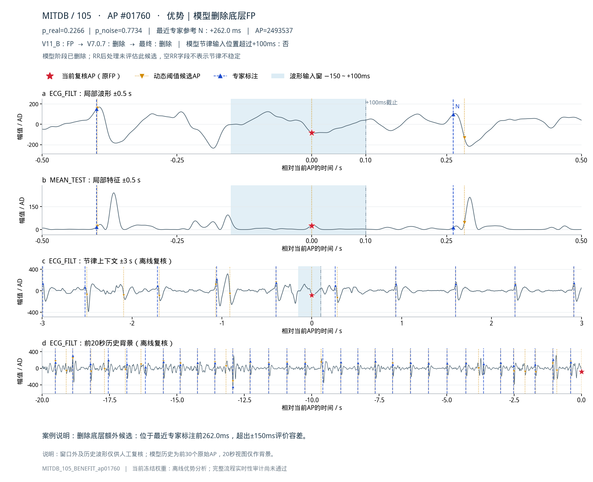
当前AP在底层为FP，位于最近专家参考标注前262.0ms，超出±150ms评价容差。模型p_real=0.2266、p_noise=0.7734，未通过原0.70噪声阈值；RR未评估此候选。
MITDB_105_BENEFIT_ap01824
优势｜RR规则删除底层FP · 最近专家标注前超过150ms
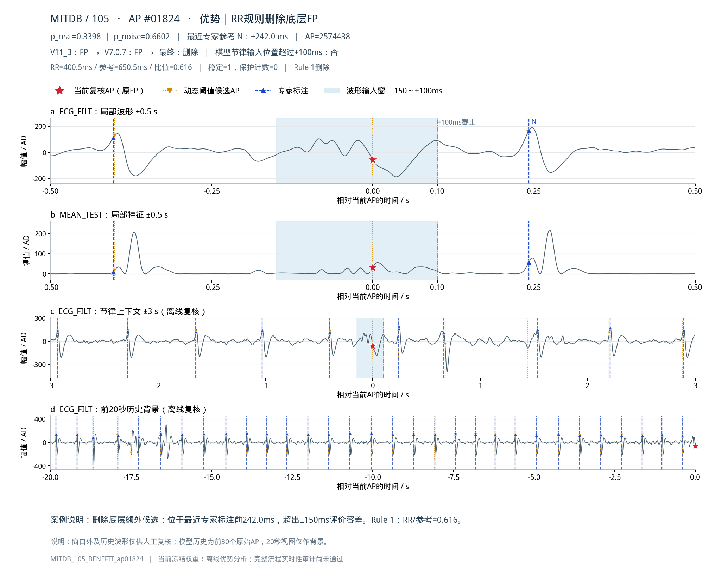
当前AP在底层为FP，位于最近专家参考标注前242.0ms，超出±150ms评价容差。模型以p_real=0.3398保留，随后Rule 1删除；RR=400.5ms，参考RR=650.5ms，比值=0.616，历史稳定=1、cooldown=0。
MITDB_105_BENEFIT_ap01862
优势｜模型删除底层FP · 最近专家标注前超过150ms
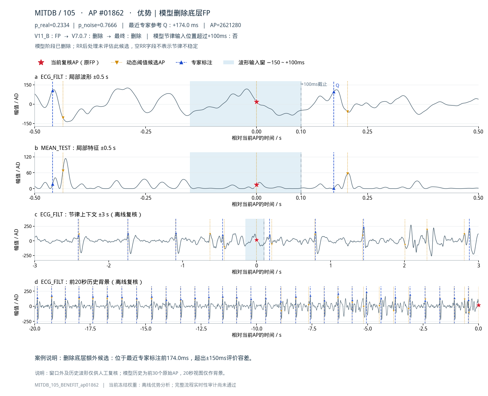
当前AP在底层为FP，位于最近专家参考标注前174.0ms，超出±150ms评价容差。模型p_real=0.2334、p_noise=0.7666，未通过原0.70噪声阈值；RR未评估此候选。
MITDB_105_BENEFIT_ap01867
优势｜RR规则删除底层FP · 最近专家标注前超过150ms
当前AP在底层为FP，位于最近专家参考标注前573.0ms，超出±150ms评价容差。模型以p_real=0.3613保留，随后Rule 1删除；RR=299.0ms，参考RR=645.0ms，比值=0.464，历史稳定=1、cooldown=0。
MITDB_105_BENEFIT_ap01873
优势｜RR规则删除底层FP · 最近专家标注前超过150ms
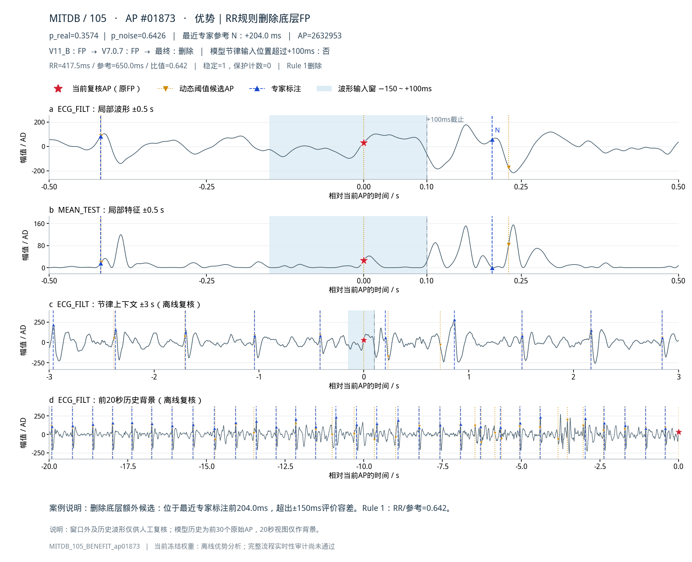
当前AP在底层为FP，位于最近专家参考标注前204.0ms，超出±150ms评价容差。模型以p_real=0.3574保留，随后Rule 1删除；RR=417.5ms，参考RR=650.0ms，比值=0.642，历史稳定=1、cooldown=0。
MITDB_105_BENEFIT_ap01879
优势｜模型删除底层FP · 最近专家标注前超过150ms
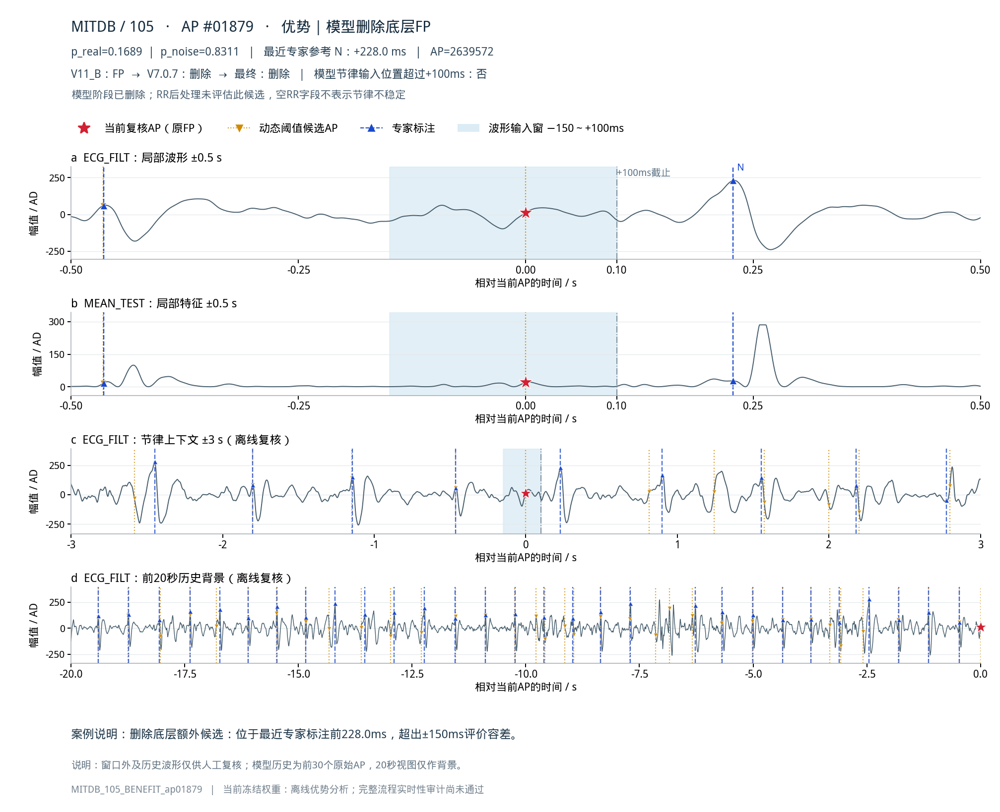
当前AP在底层为FP，位于最近专家参考标注前228.0ms，超出±150ms评价容差。模型p_real=0.1689、p_noise=0.8311，未通过原0.70噪声阈值；RR未评估此候选。
MITDB_105_BENEFIT_ap01883
优势｜模型删除底层FP · 最近专家标注前超过150ms
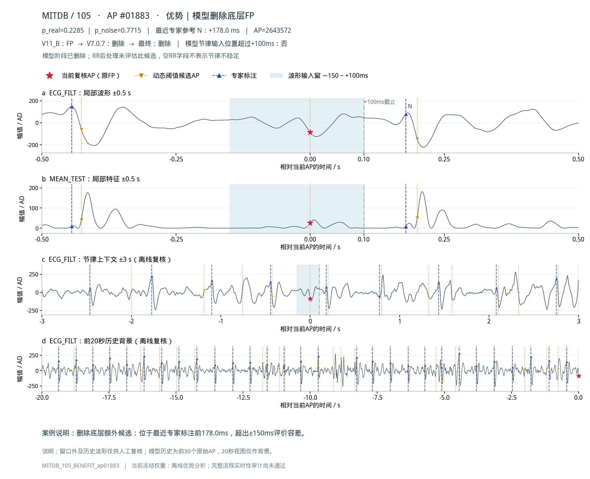
当前AP在底层为FP，位于最近专家参考标注前178.0ms，超出±150ms评价容差。模型p_real=0.2285、p_noise=0.7715，未通过原0.70噪声阈值；RR未评估此候选。
MITDB_105_BENEFIT_ap01887
优势｜模型删除底层FP · 最近专家标注后超过150ms
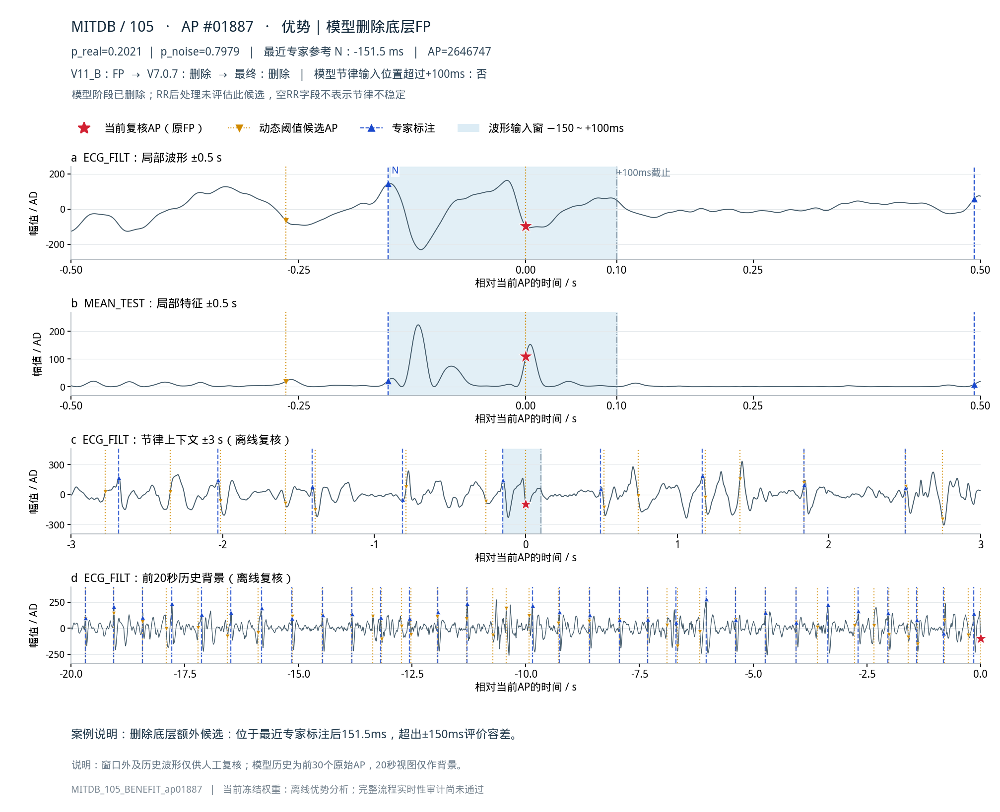
当前AP在底层为FP，位于最近专家参考标注后151.5ms，超出±150ms评价容差。模型p_real=0.2021、p_noise=0.7979，未通过原0.70噪声阈值；RR未评估此候选。
MITDB_105_BENEFIT_ap01889
优势｜模型删除底层FP · 最近专家标注后超过150ms
当前AP在底层为FP，位于最近专家参考标注后248.0ms，超出±150ms评价容差。模型p_real=0.2676、p_noise=0.7324，未通过原0.70噪声阈值；RR未评估此候选。
MITDB_105_BENEFIT_ap01894
优势｜模型删除底层FP · 最近专家标注后超过150ms
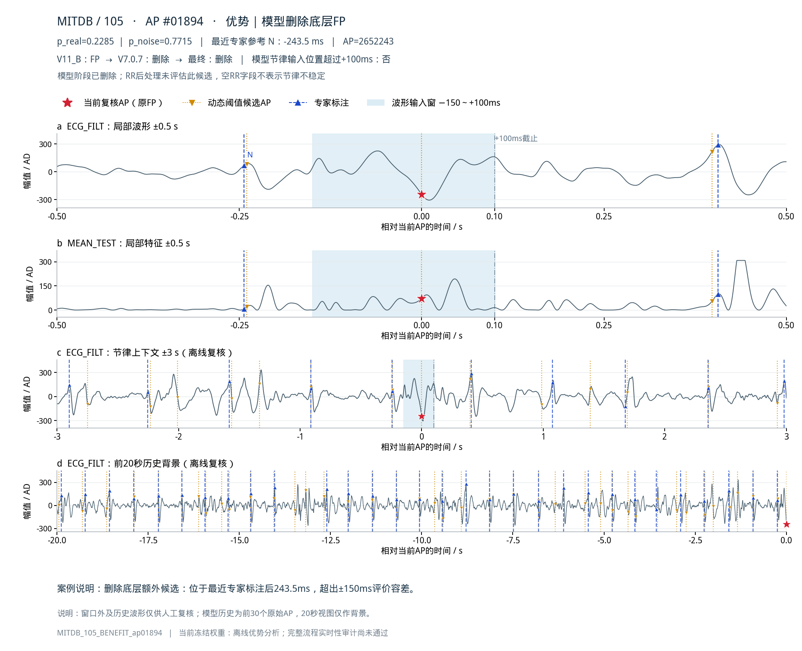
当前AP在底层为FP，位于最近专家参考标注后243.5ms，超出±150ms评价容差。模型p_real=0.2285、p_noise=0.7715，未通过原0.70噪声阈值；RR未评估此候选。
MITDB_105_BENEFIT_ap01901
优势｜模型删除底层FP · 最近专家标注后超过150ms
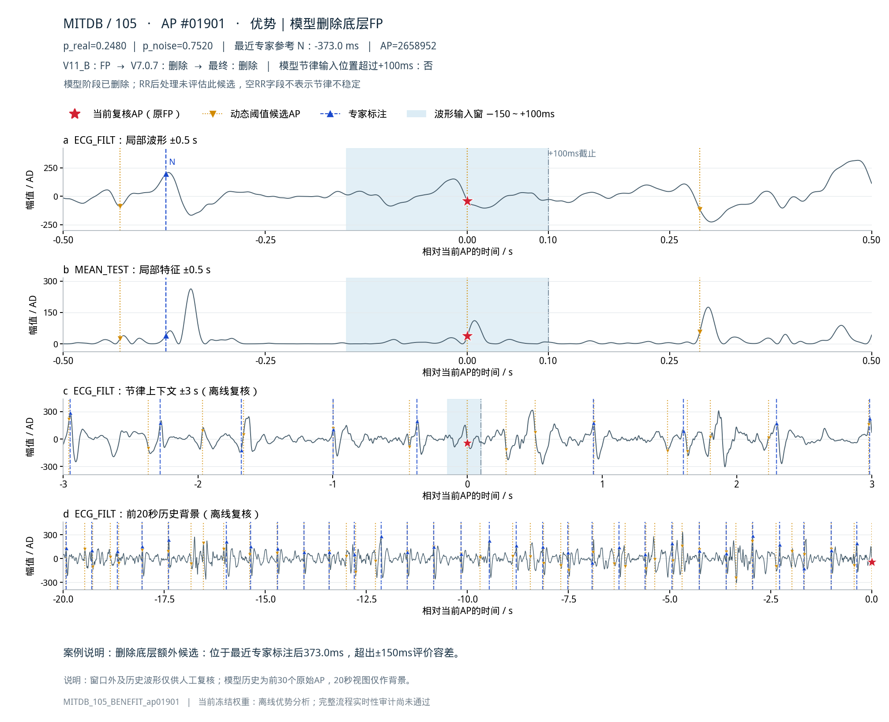
当前AP在底层为FP，位于最近专家参考标注后373.0ms，超出±150ms评价容差。模型p_real=0.2480、p_noise=0.7520，未通过原0.70噪声阈值；RR未评估此候选。
MITDB_105_BENEFIT_ap01903
优势｜模型删除底层FP · 最近专家标注前超过150ms
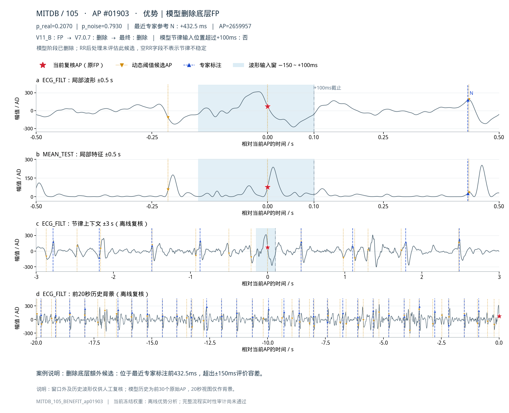
当前AP在底层为FP，位于最近专家参考标注前432.5ms，超出±150ms评价容差。模型p_real=0.2070、p_noise=0.7930，未通过原0.70噪声阈值；RR未评估此候选。
MITDB_105_BENEFIT_ap01906
优势｜模型删除底层FP · 容差内重复候选，专家事件最终漏检
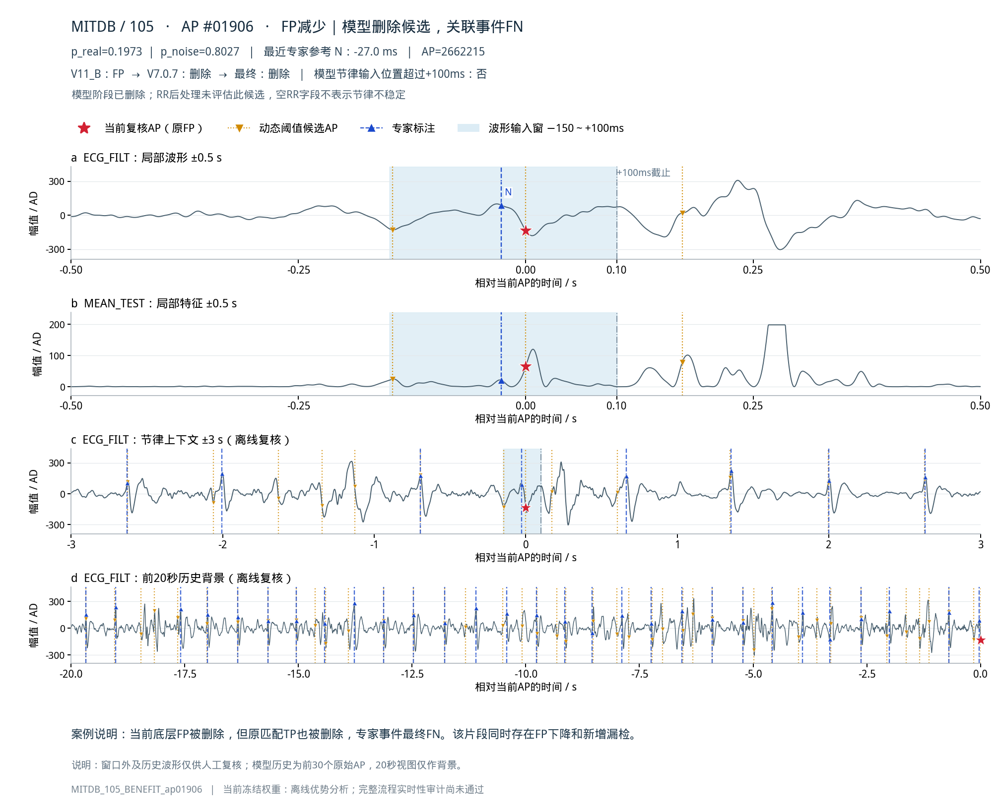
底层FP位于最近专家标注-27.0ms，在±150ms匹配容差内；该专家事件在底层已由AP#1905匹配。当前FP候选及原匹配TP候选均被删除，该专家事件最终漏检。同一片段同时计入候选级FP减少和事件级新增FN，不能据FP标签把该波形判为噪声。模型p_real=0.1973、p_noise=0.8027，未通过原0.70噪声阈值；RR未评估此候选。
MITDB_105_BENEFIT_ap01920
优势｜模型删除底层FP · 最近专家标注前超过150ms
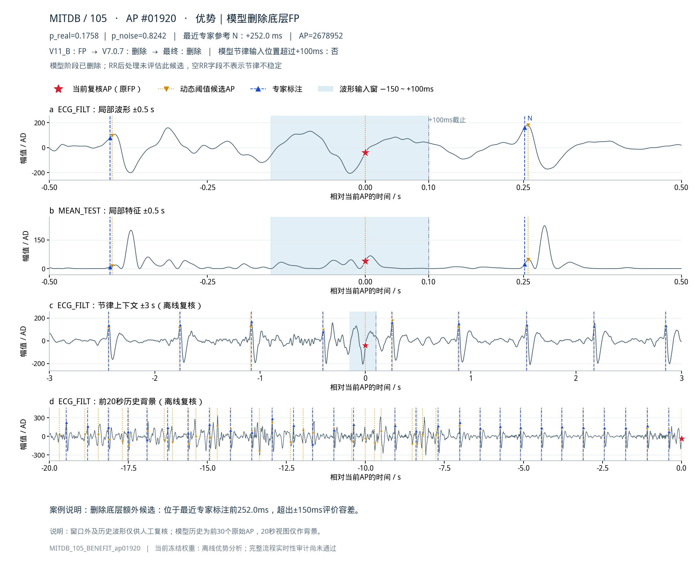
当前AP在底层为FP，位于最近专家参考标注前252.0ms，超出±150ms评价容差。模型p_real=0.1758、p_noise=0.8242，未通过原0.70噪声阈值；RR未评估此候选。
MITDB_105_BENEFIT_ap02391
优势｜RR规则删除底层FP · 最近专家标注后超过150ms
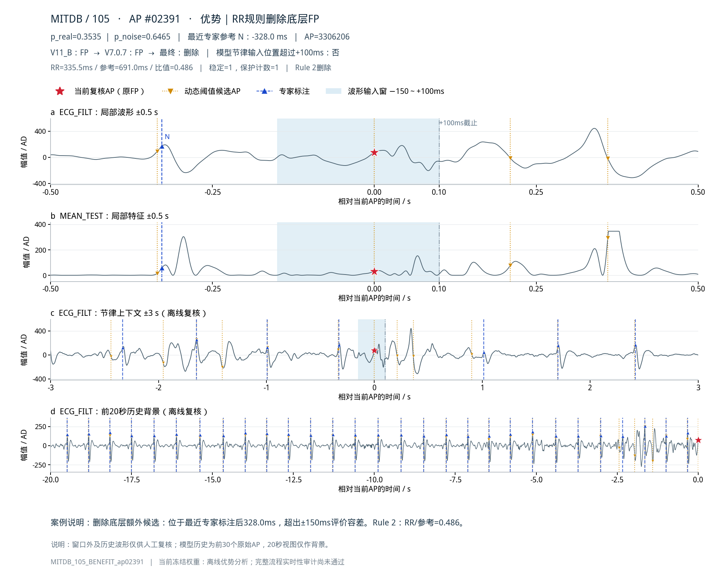
当前AP在底层为FP，位于最近专家参考标注后328.0ms，超出±150ms评价容差。模型以p_real=0.3535保留，随后Rule 2删除；RR=335.5ms，参考RR=691.0ms，比值=0.486，历史稳定=1、cooldown=1。此前3秒低置信AP数=2，前一保留概率减当前概率=0.572。
MITDB_105_BENEFIT_ap02392
优势｜模型删除底层FP · 最近专家标注后超过150ms
当前AP在底层为FP，位于最近专家参考标注后538.0ms，超出±150ms评价容差。模型p_real=0.2695、p_noise=0.7305，未通过原0.70噪声阈值；RR未评估此候选。该候选的模型节律输入引用了AP后超过100ms的位置，属于冻结模型离线画像。
MITDB_105_BENEFIT_ap02443
优势｜模型删除底层FP · 最近专家标注前超过150ms
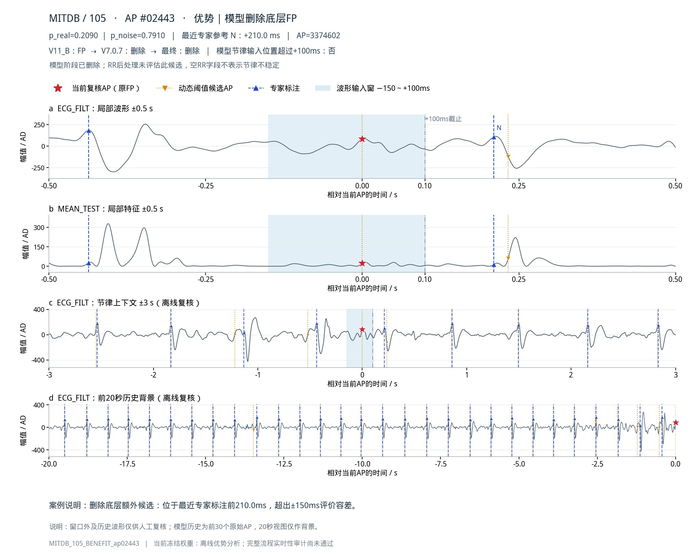
当前AP在底层为FP，位于最近专家参考标注前210.0ms，超出±150ms评价容差。模型p_real=0.2090、p_noise=0.7910，未通过原0.70噪声阈值；RR未评估此候选。
MITDB_105_BENEFIT_ap02453
优势｜模型删除底层FP · 最近专家标注前超过150ms
当前AP在底层为FP，位于最近专家参考标注前304.0ms，超出±150ms评价容差。模型p_real=0.1592、p_noise=0.8408，未通过原0.70噪声阈值；RR未评估此候选。
MITDB_105_BENEFIT_ap02455
优势｜模型删除底层FP · 最近专家标注前超过150ms
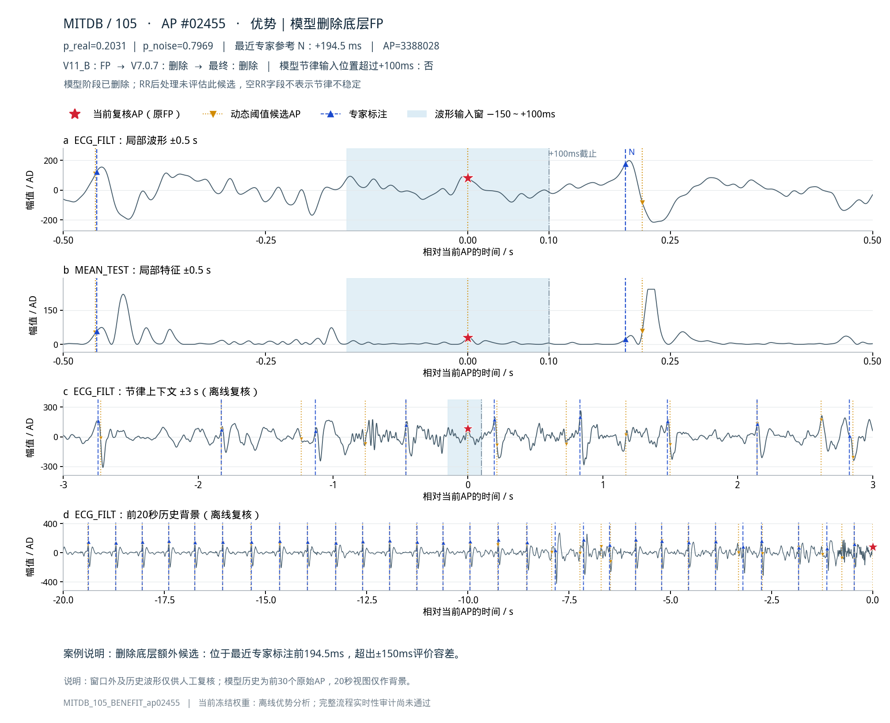
当前AP在底层为FP，位于最近专家参考标注前194.5ms，超出±150ms评价容差。模型p_real=0.2031、p_noise=0.7969，未通过原0.70噪声阈值；RR未评估此候选。
MITDB_105_BENEFIT_ap02461
优势｜RR规则删除底层FP · 最近专家标注前超过150ms
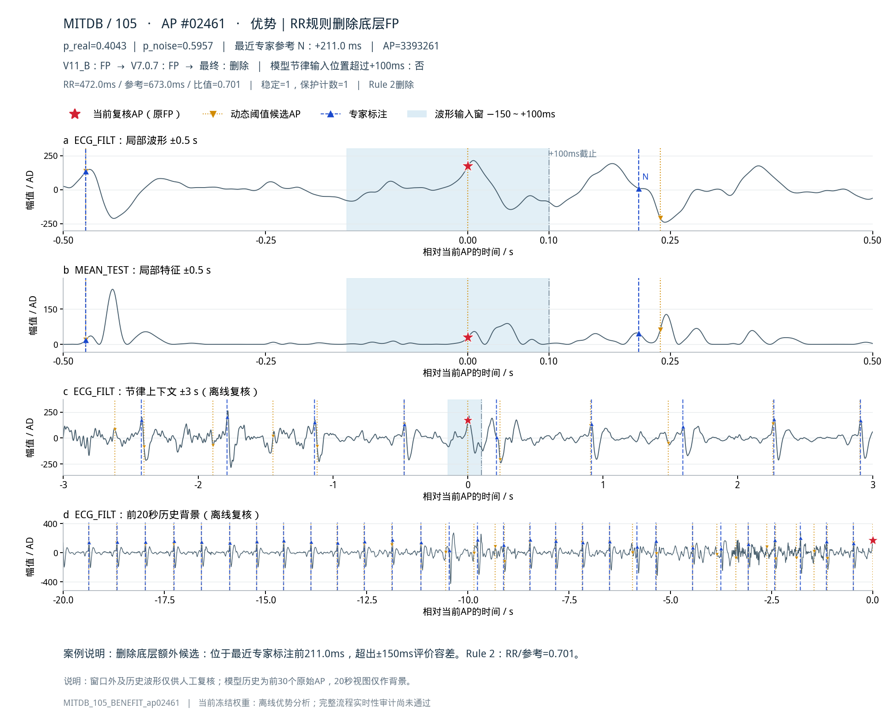
当前AP在底层为FP，位于最近专家参考标注前211.0ms，超出±150ms评价容差。模型以p_real=0.4043保留，随后Rule 2删除；RR=472.0ms，参考RR=673.0ms，比值=0.701，历史稳定=1、cooldown=1。此前3秒低置信AP数=4，前一保留概率减当前概率=0.354。
MITDB_105_BENEFIT_ap02491
优势｜模型删除底层FP · 最近专家标注前超过150ms
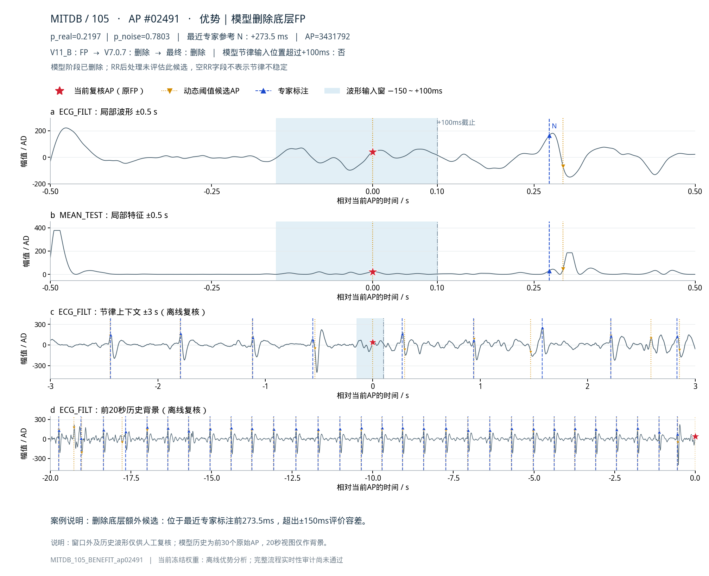
当前AP在底层为FP，位于最近专家参考标注前273.5ms，超出±150ms评价容差。模型p_real=0.2197、p_noise=0.7803，未通过原0.70噪声阈值；RR未评估此候选。
MITDB_111_BENEFIT_ap00274
优势｜模型删除底层FP · 最近专家标注后超过150ms
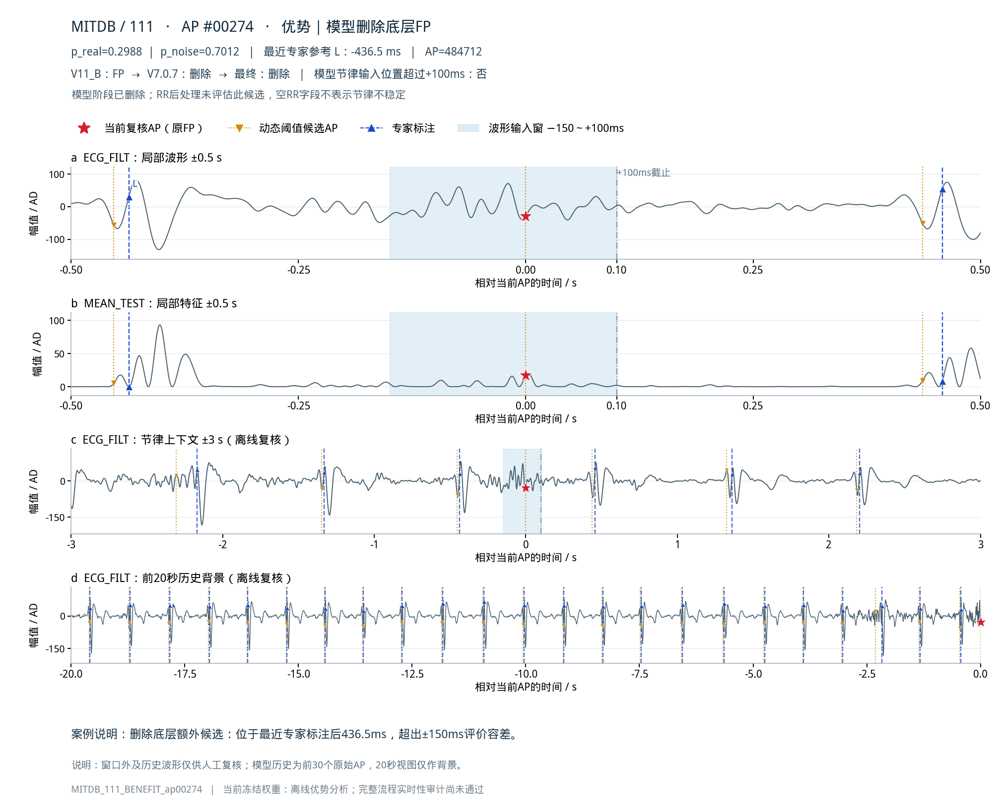
当前AP在底层为FP，位于最近专家参考标注后436.5ms，超出±150ms评价容差。模型p_real=0.2988、p_noise=0.7012，未通过原0.70噪声阈值；RR未评估此候选。
MITDB_111_BENEFIT_ap01608
优势｜RR规则删除底层FP · 最近专家标注前超过150ms
当前AP在底层为FP，位于最近专家参考标注前254.0ms，超出±150ms评价容差。模型以p_real=0.4336保留，随后Rule 1删除；RR=527.0ms，参考RR=807.5ms，比值=0.653，历史稳定=1、cooldown=0。
MITDB_117_BENEFIT_ap00606
优势｜模型删除底层FP · 最近专家标注前超过150ms
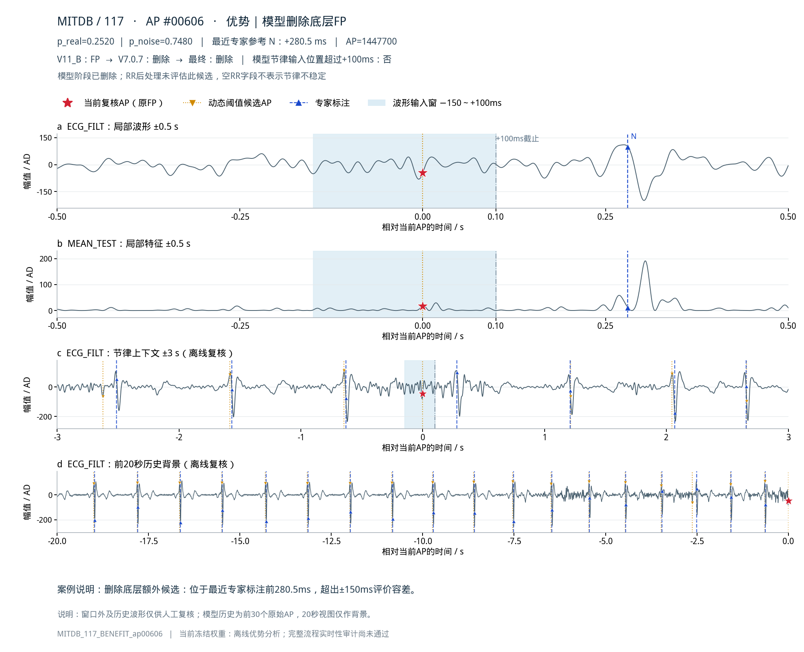
当前AP在底层为FP，位于最近专家参考标注前280.5ms，超出±150ms评价容差。模型p_real=0.2520、p_noise=0.7480，未通过原0.70噪声阈值；RR未评估此候选。
MITDB_121_BENEFIT_ap00901
优势｜模型删除底层FP · 最近专家标注前超过150ms
当前AP在底层为FP，位于最近专家参考标注前160.0ms，超出±150ms评价容差。模型p_real=0.2393、p_noise=0.7607，未通过原0.70噪声阈值；RR未评估此候选。
MITDB_121_BENEFIT_ap01538
优势｜模型删除底层FP · 最近专家标注前超过150ms
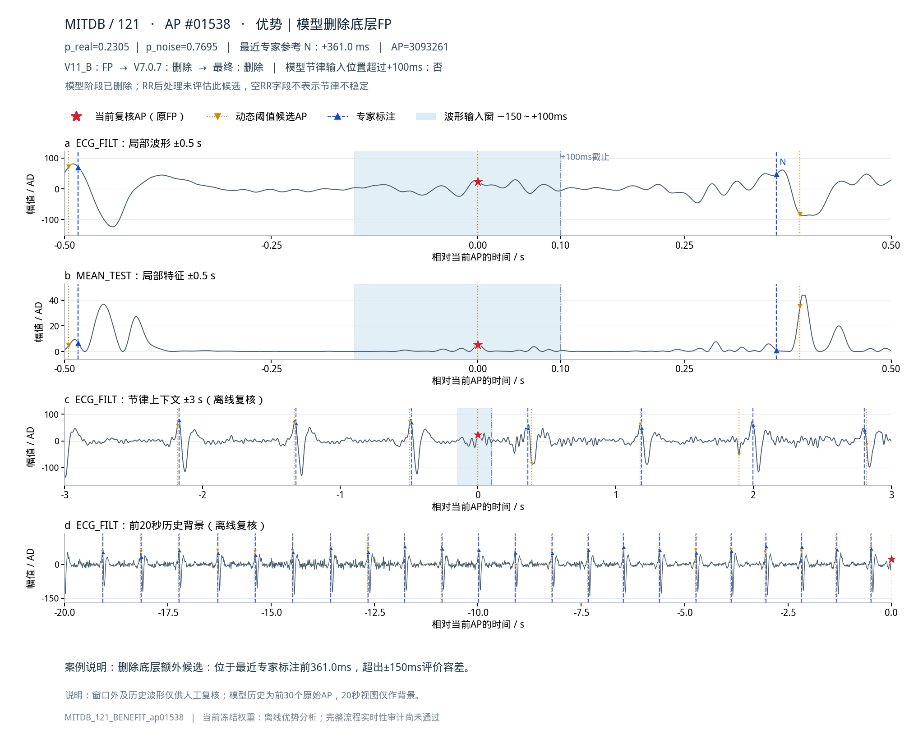
当前AP在底层为FP，位于最近专家参考标注前361.0ms，超出±150ms评价容差。模型p_real=0.2305、p_noise=0.7695，未通过原0.70噪声阈值；RR未评估此候选。
MITDB_121_BENEFIT_ap01566
优势｜模型删除底层FP · 最近专家标注前超过150ms
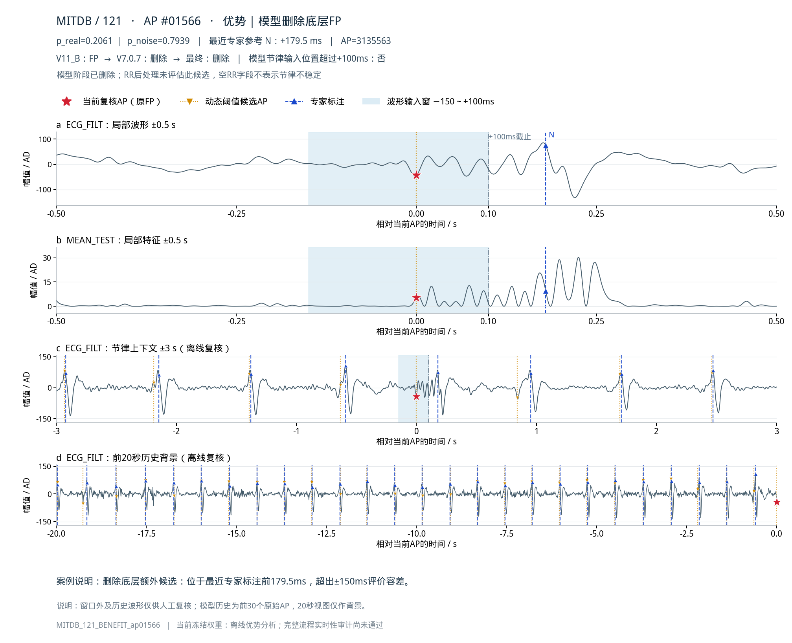
当前AP在底层为FP，位于最近专家参考标注前179.5ms，超出±150ms评价容差。模型p_real=0.2061、p_noise=0.7939，未通过原0.70噪声阈值；RR未评估此候选。
MITDB_121_BENEFIT_ap01631
优势｜模型删除底层FP · 最近专家标注前超过150ms
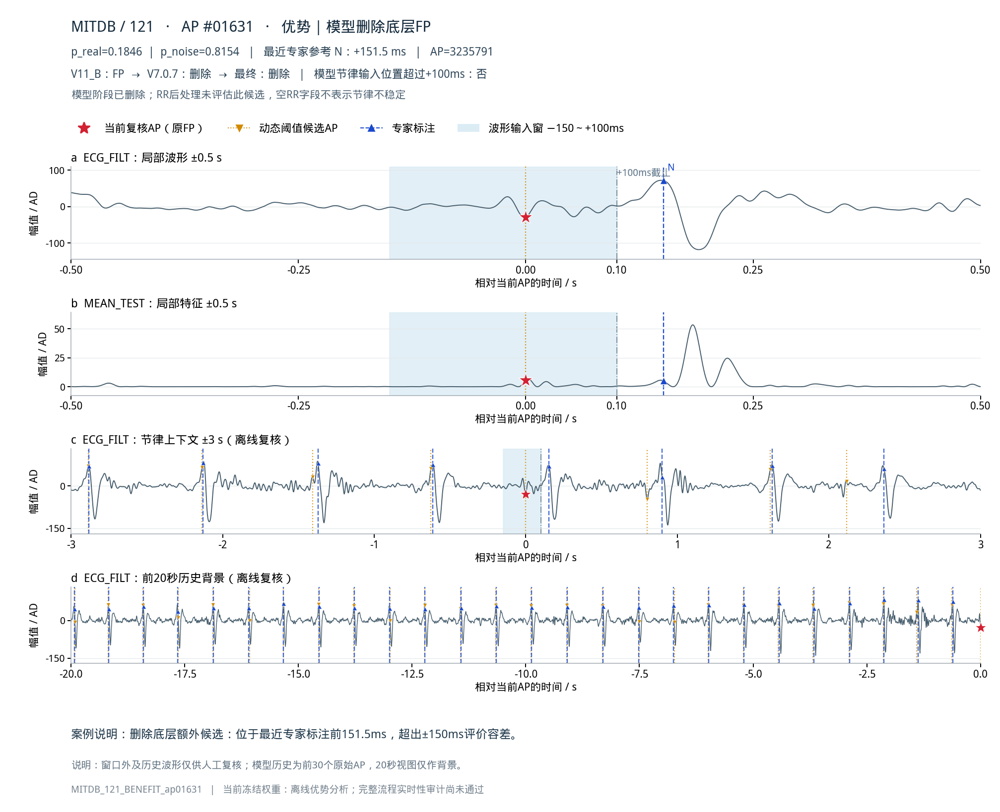
当前AP在底层为FP，位于最近专家参考标注前151.5ms，超出±150ms评价容差。模型p_real=0.1846、p_noise=0.8154，未通过原0.70噪声阈值；RR未评估此候选。
MITDB_121_BENEFIT_ap01634
优势｜模型删除底层FP · 最近专家标注前超过150ms
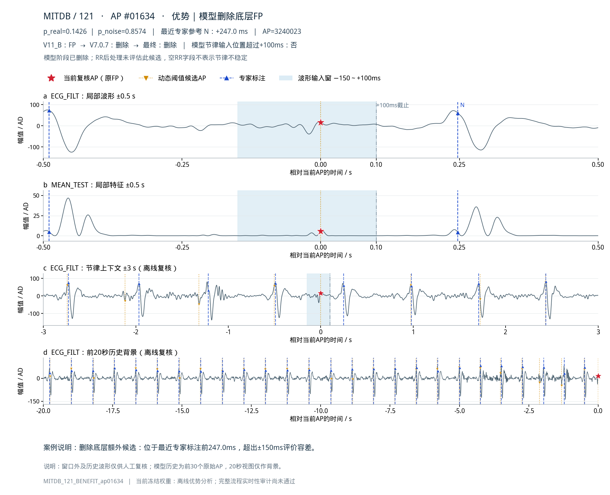
当前AP在底层为FP，位于最近专家参考标注前247.0ms，超出±150ms评价容差。模型p_real=0.1426、p_noise=0.8574，未通过原0.70噪声阈值；RR未评估此候选。
MITDB_121_BENEFIT_ap01640
优势｜模型删除底层FP · 最近专家标注前超过150ms
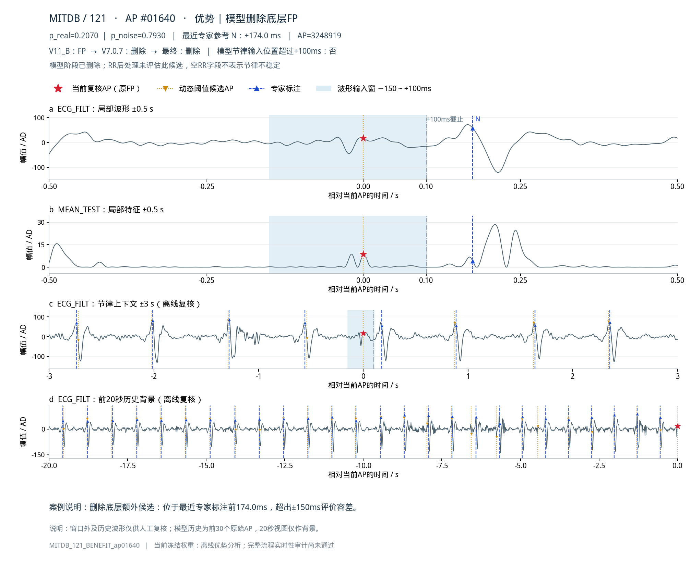
当前AP在底层为FP，位于最近专家参考标注前174.0ms，超出±150ms评价容差。模型p_real=0.2070、p_noise=0.7930，未通过原0.70噪声阈值；RR未评估此候选。
MITDB_121_BENEFIT_ap01750
优势｜模型删除底层FP · 最近专家标注前超过150ms
当前AP在底层为FP，位于最近专家参考标注前303.0ms，超出±150ms评价容差。模型p_real=0.2236、p_noise=0.7764，未通过原0.70噪声阈值；RR未评估此候选。
MITDB_200_BENEFIT_ap00209
优势｜模型删除底层FP · 最近专家标注前超过150ms
当前AP在底层为FP，位于最近专家参考标注前175.5ms，超出±150ms评价容差。模型p_real=0.2891、p_noise=0.7109，未通过原0.70噪声阈值；RR未评估此候选。
MITDB_200_BENEFIT_ap00226
优势｜模型删除底层FP · 最近专家标注前超过150ms
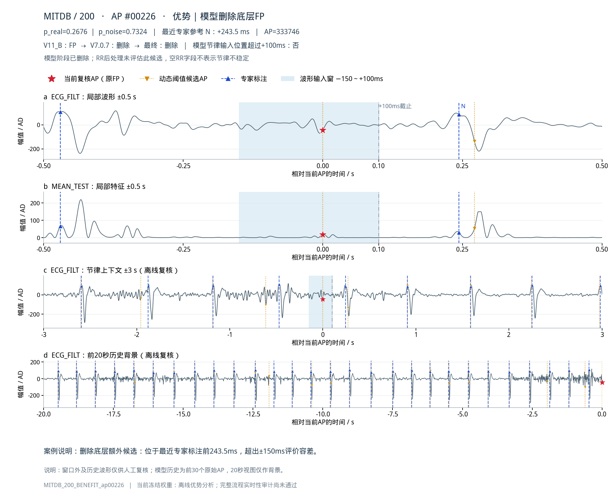
当前AP在底层为FP，位于最近专家参考标注前243.5ms，超出±150ms评价容差。模型p_real=0.2676、p_noise=0.7324，未通过原0.70噪声阈值；RR未评估此候选。
MITDB_200_BENEFIT_ap00303
优势｜模型删除底层FP · 最近专家标注前超过150ms
当前AP在底层为FP，位于最近专家参考标注前268.5ms，超出±150ms评价容差。模型p_real=0.2559、p_noise=0.7441，未通过原0.70噪声阈值；RR未评估此候选。
MITDB_200_BENEFIT_ap00327
优势｜模型删除底层FP · 最近专家标注前超过150ms
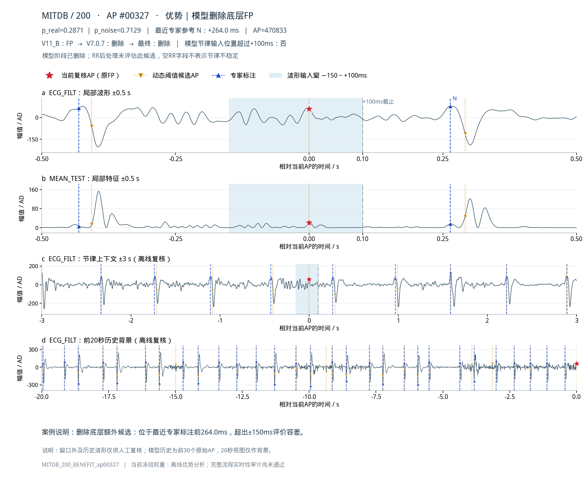
当前AP在底层为FP，位于最近专家参考标注前264.0ms，超出±150ms评价容差。模型p_real=0.2871、p_noise=0.7129，未通过原0.70噪声阈值；RR未评估此候选。
MITDB_200_BENEFIT_ap00388
优势｜RR规则删除底层FP · 最近专家标注前超过150ms
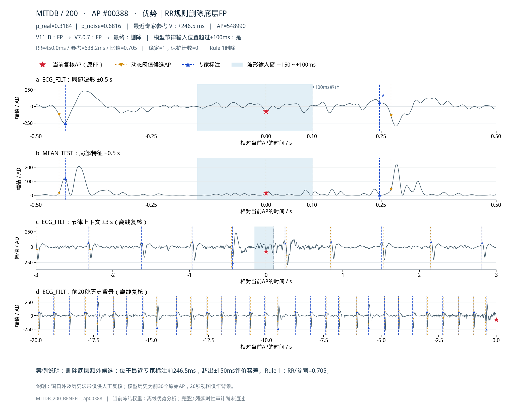
当前AP在底层为FP，位于最近专家参考标注前246.5ms，超出±150ms评价容差。模型以p_real=0.3184保留，随后Rule 1删除；RR=450.0ms，参考RR=638.2ms，比值=0.705，历史稳定=1、cooldown=0。该候选的模型节律输入引用了AP后超过100ms的位置，属于冻结模型离线画像。
MITDB_200_BENEFIT_ap00395
优势｜模型删除底层FP · 最近专家标注前超过150ms
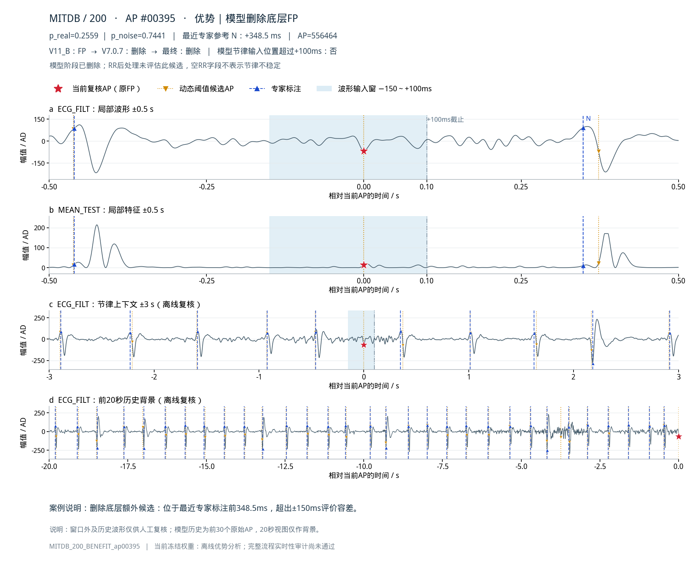
当前AP在底层为FP，位于最近专家参考标注前348.5ms，超出±150ms评价容差。模型p_real=0.2559、p_noise=0.7441，未通过原0.70噪声阈值；RR未评估此候选。
MITDB_200_BENEFIT_ap00455
优势｜RR规则删除底层FP · 最近专家标注前超过150ms
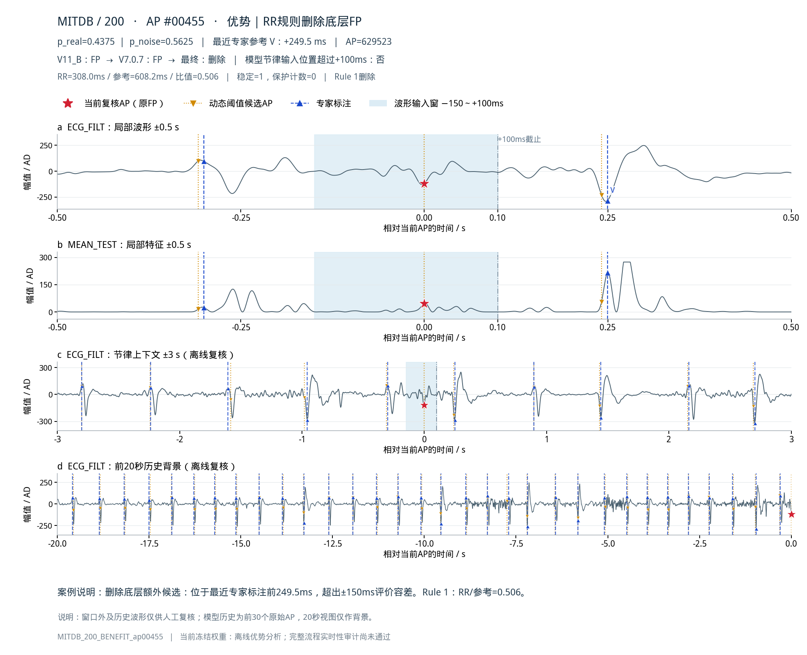
当前AP在底层为FP，位于最近专家参考标注前249.5ms，超出±150ms评价容差。模型以p_real=0.4375保留，随后Rule 1删除；RR=308.0ms，参考RR=608.2ms，比值=0.506，历史稳定=1、cooldown=0。
MITDB_200_BENEFIT_ap00465
优势｜RR规则删除底层FP · 最近专家标注后超过150ms
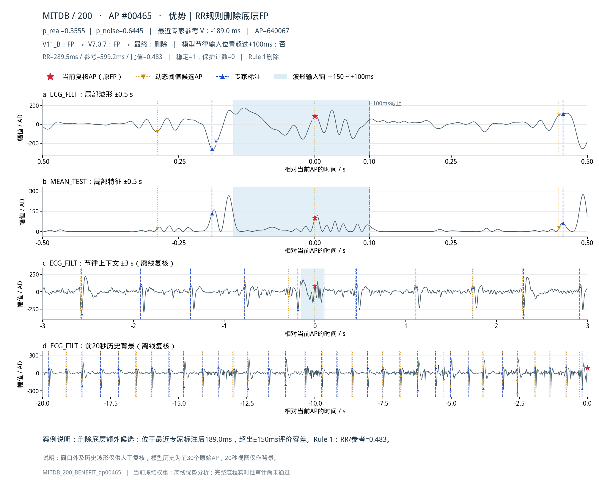
当前AP在底层为FP，位于最近专家参考标注后189.0ms，超出±150ms评价容差。模型以p_real=0.3555保留，随后Rule 1删除；RR=289.5ms，参考RR=599.2ms，比值=0.483，历史稳定=1、cooldown=0。
MITDB_200_BENEFIT_ap00516
优势｜模型删除底层FP · 最近专家标注前超过150ms
当前AP在底层为FP，位于最近专家参考标注前187.0ms，超出±150ms评价容差。模型p_real=0.2910、p_noise=0.7090，未通过原0.70噪声阈值；RR未评估此候选。
MITDB_200_BENEFIT_ap00522
优势｜模型删除底层FP · 最近专家标注前超过150ms
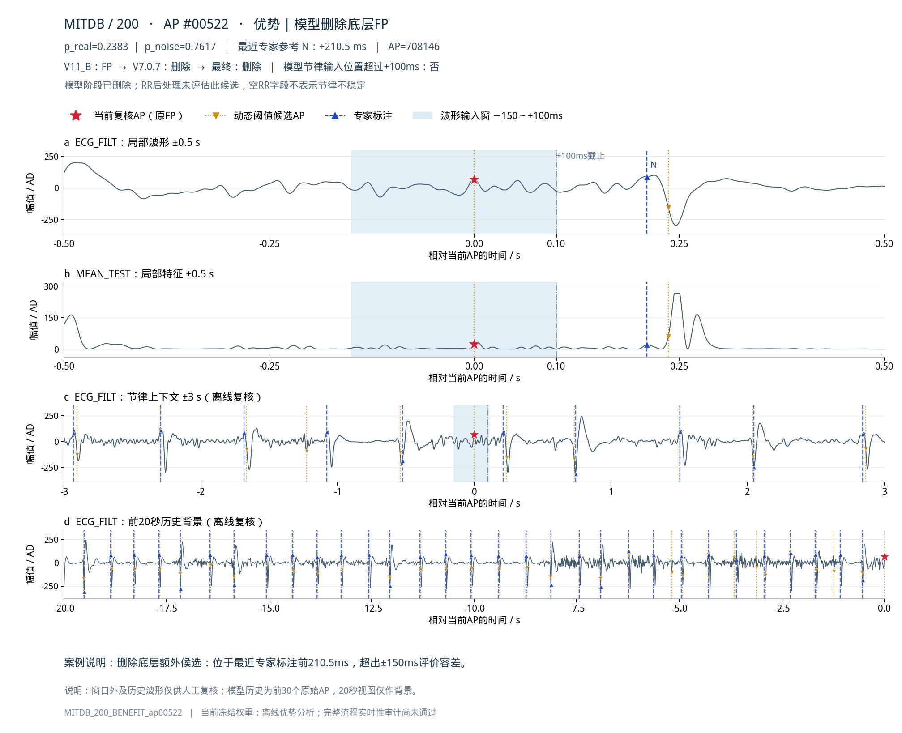
当前AP在底层为FP，位于最近专家参考标注前210.5ms，超出±150ms评价容差。模型p_real=0.2383、p_noise=0.7617，未通过原0.70噪声阈值；RR未评估此候选。
MITDB_200_BENEFIT_ap00712
优势｜模型删除底层FP · 最近专家标注后超过150ms
当前AP在底层为FP，位于最近专家参考标注后486.0ms，超出±150ms评价容差。模型p_real=0.2852、p_noise=0.7148，未通过原0.70噪声阈值；RR未评估此候选。该候选的模型节律输入引用了AP后超过100ms的位置，属于冻结模型离线画像。
MITDB_200_BENEFIT_ap00715
优势｜模型删除底层FP · 最近专家标注前超过150ms
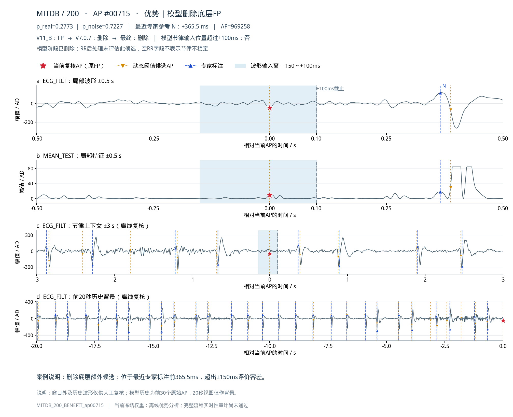
当前AP在底层为FP，位于最近专家参考标注前365.5ms，超出±150ms评价容差。模型p_real=0.2773、p_noise=0.7227，未通过原0.70噪声阈值；RR未评估此候选。
MITDB_200_BENEFIT_ap00884
优势｜RR规则删除底层FP · 容差内重复候选，专家事件仍检出
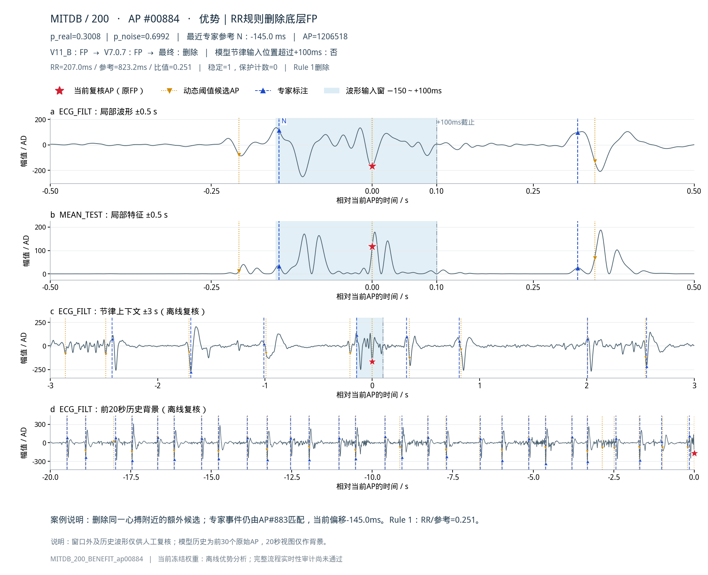
底层FP位于最近专家标注-145.0ms，在±150ms匹配容差内；该专家事件在底层已由AP#883匹配。删除当前额外候选后，该专家事件仍由AP#883检出。模型以p_real=0.3008保留，随后Rule 1删除；RR=207.0ms，参考RR=823.2ms，比值=0.251，历史稳定=1、cooldown=0。
MITDB_200_BENEFIT_ap00896
优势｜模型删除底层FP · 最近专家标注后超过150ms
当前AP在底层为FP，位于最近专家参考标注后334.5ms，超出±150ms评价容差。模型p_real=0.2715、p_noise=0.7285，未通过原0.70噪声阈值；RR未评估此候选。
MITDB_200_BENEFIT_ap00913
优势｜RR规则删除底层FP · 最近专家标注前超过150ms
当前AP在底层为FP，位于最近专家参考标注前169.5ms，超出±150ms评价容差。模型以p_real=0.3320保留，随后Rule 1删除；RR=488.0ms，参考RR=763.5ms，比值=0.639，历史稳定=1、cooldown=0。
MITDB_200_BENEFIT_ap00930
优势｜模型删除底层FP · 最近专家标注前超过150ms
当前AP在底层为FP，位于最近专家参考标注前458.5ms，超出±150ms评价容差。模型p_real=0.2734、p_noise=0.7266，未通过原0.70噪声阈值；RR未评估此候选。
MITDB_200_BENEFIT_ap01336
优势｜模型删除底层FP · 最近专家标注前超过150ms
当前AP在底层为FP，位于最近专家参考标注前292.0ms，超出±150ms评价容差。模型p_real=0.2656、p_noise=0.7344，未通过原0.70噪声阈值；RR未评估此候选。
MITDB_200_BENEFIT_ap01447
优势｜模型删除底层FP · 最近专家标注前超过150ms
当前AP在底层为FP，位于最近专家参考标注前226.0ms，超出±150ms评价容差。模型p_real=0.2070、p_noise=0.7930，未通过原0.70噪声阈值；RR未评估此候选。
MITDB_200_BENEFIT_ap01669
优势｜模型删除底层FP · 最近专家标注前超过150ms
当前AP在底层为FP，位于最近专家参考标注前274.5ms，超出±150ms评价容差。模型p_real=0.2422、p_noise=0.7578，未通过原0.70噪声阈值；RR未评估此候选。
MITDB_200_BENEFIT_ap01831
优势｜模型删除底层FP · 最近专家标注前超过150ms
当前AP在底层为FP，位于最近专家参考标注前312.5ms，超出±150ms评价容差。模型p_real=0.2031、p_noise=0.7969，未通过原0.70噪声阈值；RR未评估此候选。
MITDB_200_BENEFIT_ap01853
优势｜模型删除底层FP · 最近专家标注前超过150ms
当前AP在底层为FP，位于最近专家参考标注前182.0ms，超出±150ms评价容差。模型p_real=0.2676、p_noise=0.7324，未通过原0.70噪声阈值；RR未评估此候选。
MITDB_200_BENEFIT_ap02255
优势｜模型删除底层FP · 最近专家标注前超过150ms
当前AP在底层为FP，位于最近专家参考标注前341.5ms，超出±150ms评价容差。模型p_real=0.2910、p_noise=0.7090，未通过原0.70噪声阈值；RR未评估此候选。
MITDB_200_BENEFIT_ap02420
优势｜模型删除底层FP · 最近专家标注前超过150ms
当前AP在底层为FP，位于最近专家参考标注前255.5ms，超出±150ms评价容差。模型p_real=0.2734、p_noise=0.7266，未通过原0.70噪声阈值；RR未评估此候选。
MITDB_200_BENEFIT_ap02427
优势｜RR规则删除底层FP · 最近专家标注后超过150ms
当前AP在底层为FP，位于最近专家参考标注后446.0ms，超出±150ms评价容差。模型以p_real=0.4453保留，随后Rule 1删除；RR=451.0ms，参考RR=688.8ms，比值=0.655，历史稳定=1、cooldown=0。
MITDB_200_BENEFIT_ap02447
优势｜模型删除底层FP · 最近专家标注前超过150ms
当前AP在底层为FP，位于最近专家参考标注前287.5ms，超出±150ms评价容差。模型p_real=0.2480、p_noise=0.7520，未通过原0.70噪声阈值；RR未评估此候选。
MITDB_200_BENEFIT_ap02454
优势｜模型删除底层FP · 最近专家标注前超过150ms
当前AP在底层为FP，位于最近专家参考标注前218.0ms，超出±150ms评价容差。模型p_real=0.2637、p_noise=0.7363，未通过原0.70噪声阈值；RR未评估此候选。
MITDB_200_BENEFIT_ap02597
优势｜模型删除底层FP · 最近专家标注前超过150ms
当前AP在底层为FP，位于最近专家参考标注前205.5ms，超出±150ms评价容差。模型p_real=0.2910、p_noise=0.7090，未通过原0.70噪声阈值；RR未评估此候选。
MITDB_200_BENEFIT_ap02629
优势｜模型删除底层FP · 最近专家标注前超过150ms
当前AP在底层为FP，位于最近专家参考标注前237.5ms，超出±150ms评价容差。模型p_real=0.2451、p_noise=0.7549，未通过原0.70噪声阈值；RR未评估此候选。
MITDB_203_BENEFIT_ap00065
优势｜模型删除底层FP · 最近专家标注前超过150ms
当前AP在底层为FP，位于最近专家参考标注前217.0ms，超出±150ms评价容差。模型p_real=0.2148、p_noise=0.7852，未通过原0.70噪声阈值；RR未评估此候选。
MITDB_203_BENEFIT_ap00067
优势｜FP重新匹配为TP（候选保留） · FP重新匹配为TP
当前AP在底层被评价为FP，但未被模型或RR删除；原匹配AP#66被模型删除后，当前AP以p_real=0.5039重新匹配专家事件76（V，相对AP-87.0ms）。该专家事件在各阶段均检出，这是候选匹配变化，不是新增检出一个心搏。
MITDB_203_BENEFIT_ap00170
优势｜FP重新匹配为TP（候选保留） · FP重新匹配为TP
当前AP在底层被评价为FP，但未被模型或RR删除；原匹配AP#169被模型删除后，当前AP以p_real=0.6992重新匹配专家事件177（N，相对AP-27.5ms）。该专家事件在各阶段均检出，这是候选匹配变化，不是新增检出一个心搏。
MITDB_203_BENEFIT_ap00482
优势｜模型删除底层FP · 最近专家标注前超过150ms
当前AP在底层为FP，位于最近专家参考标注前240.5ms，超出±150ms评价容差。模型p_real=0.2041、p_noise=0.7959，未通过原0.70噪声阈值；RR未评估此候选。
MITDB_203_BENEFIT_ap00484
优势｜模型删除底层FP · 最近专家标注前超过150ms
当前AP在底层为FP，位于最近专家参考标注前184.0ms，超出±150ms评价容差。模型p_real=0.2451、p_noise=0.7549，未通过原0.70噪声阈值；RR未评估此候选。
MITDB_203_BENEFIT_ap00486
优势｜模型删除底层FP · 最近专家标注前超过150ms
当前AP在底层为FP，位于最近专家参考标注前203.5ms，超出±150ms评价容差。模型p_real=0.1992、p_noise=0.8008，未通过原0.70噪声阈值；RR未评估此候选。
MITDB_203_BENEFIT_ap00489
优势｜模型删除底层FP · 最近专家标注前超过150ms
当前AP在底层为FP，位于最近专家参考标注前275.0ms，超出±150ms评价容差。模型p_real=0.2383、p_noise=0.7617，未通过原0.70噪声阈值；RR未评估此候选。
MITDB_203_BENEFIT_ap00641
优势｜模型删除底层FP · 最近专家标注前超过150ms
当前AP在底层为FP，位于最近专家参考标注前196.5ms，超出±150ms评价容差。模型p_real=0.2451、p_noise=0.7549，未通过原0.70噪声阈值；RR未评估此候选。
MITDB_203_BENEFIT_ap00644
优势｜模型删除底层FP · 最近专家标注前超过150ms
当前AP在底层为FP，位于最近专家参考标注前277.5ms，超出±150ms评价容差。模型p_real=0.2217、p_noise=0.7783，未通过原0.70噪声阈值；RR未评估此候选。
MITDB_203_BENEFIT_ap00795
优势｜模型删除底层FP · 最近专家标注前超过150ms
当前AP在底层为FP，位于最近专家参考标注前334.5ms，超出±150ms评价容差。模型p_real=0.2080、p_noise=0.7920，未通过原0.70噪声阈值；RR未评估此候选。
MITDB_203_BENEFIT_ap00811
优势｜模型删除底层FP · 最近专家标注后超过150ms
当前AP在底层为FP，位于最近专家参考标注后420.5ms，超出±150ms评价容差。模型p_real=0.2227、p_noise=0.7773，未通过原0.70噪声阈值；RR未评估此候选。
MITDB_203_BENEFIT_ap00852
优势｜FP重新匹配为TP（候选保留） · FP重新匹配为TP
当前AP在底层被评价为FP，但未被模型或RR删除；原匹配AP#851被模型删除后，当前AP以p_real=0.6016重新匹配专家事件853（N，相对AP-23.5ms）。该专家事件在各阶段均检出，这是候选匹配变化，不是新增检出一个心搏。
MITDB_203_BENEFIT_ap00885
优势｜RR规则删除底层FP · 最近专家标注前超过150ms
当前AP在底层为FP，位于最近专家参考标注前280.5ms，超出±150ms评价容差。模型以p_real=0.3281保留，随后Rule 1删除；RR=307.5ms，参考RR=396.0ms，比值=0.777，历史稳定=1、cooldown=0。
MITDB_203_BENEFIT_ap00887
优势｜模型删除底层FP · 最近专家标注后超过150ms
当前AP在底层为FP，位于最近专家参考标注后307.5ms，超出±150ms评价容差。模型p_real=0.2852、p_noise=0.7148，未通过原0.70噪声阈值；RR未评估此候选。
MITDB_203_BENEFIT_ap00888
优势｜模型删除底层FP · 最近专家标注前超过150ms
当前AP在底层为FP，位于最近专家参考标注前522.5ms，超出±150ms评价容差。模型p_real=0.2354、p_noise=0.7646，未通过原0.70噪声阈值；RR未评估此候选。
MITDB_203_BENEFIT_ap00889
优势｜模型删除底层FP · 最近专家标注前超过150ms
当前AP在底层为FP，位于最近专家参考标注前320.5ms，超出±150ms评价容差。模型p_real=0.2871、p_noise=0.7129，未通过原0.70噪声阈值；RR未评估此候选。
MITDB_203_BENEFIT_ap00891
优势｜模型删除底层FP · 容差内重复候选，专家事件最终漏检
底层FP位于最近专家标注-25.5ms，在±150ms匹配容差内；该专家事件在底层已由AP#890匹配。当前FP候选及原匹配TP候选均被删除，该专家事件最终漏检。同一片段同时计入候选级FP减少和事件级新增FN，不能据FP标签把该波形判为噪声。模型p_real=0.2910、p_noise=0.7090，未通过原0.70噪声阈值；RR未评估此候选。
MITDB_203_BENEFIT_ap00892
优势｜模型删除底层FP · 最近专家标注后超过150ms
当前AP在底层为FP，位于最近专家参考标注后300.0ms，超出±150ms评价容差。模型p_real=0.2383、p_noise=0.7617，未通过原0.70噪声阈值；RR未评估此候选。
MITDB_203_BENEFIT_ap00895
优势｜模型删除底层FP · 最近专家标注前超过150ms
当前AP在底层为FP，位于最近专家参考标注前197.5ms，超出±150ms评价容差。模型p_real=0.2480、p_noise=0.7520，未通过原0.70噪声阈值；RR未评估此候选。
MITDB_203_BENEFIT_ap01031
优势｜模型删除底层FP · 最近专家标注后超过150ms
当前AP在底层为FP，位于最近专家参考标注后294.5ms，超出±150ms评价容差。模型p_real=0.2949、p_noise=0.7051，未通过原0.70噪声阈值；RR未评估此候选。
MITDB_203_BENEFIT_ap01041
优势｜RR规则删除底层FP · 最近专家标注后超过150ms
当前AP在底层为FP，位于最近专家参考标注后201.5ms，超出±150ms评价容差。模型以p_real=0.3340保留，随后Rule 1删除；RR=192.0ms，参考RR=410.2ms，比值=0.468，历史稳定=1、cooldown=0。
MITDB_203_BENEFIT_ap01042
优势｜模型删除底层FP · 最近专家标注前超过150ms
当前AP在底层为FP，位于最近专家参考标注前266.0ms，超出±150ms评价容差。模型p_real=0.2217、p_noise=0.7783，未通过原0.70噪声阈值；RR未评估此候选。
MITDB_203_BENEFIT_ap01045
优势｜RR规则删除底层FP · 容差内重复候选，专家事件仍检出
底层FP位于最近专家标注-97.0ms，在±150ms匹配容差内；该专家事件在底层已由AP#1044匹配。删除当前额外候选后，该专家事件仍由AP#1044检出。模型以p_real=0.5078保留，随后Rule 2删除；RR=155.5ms，参考RR=410.0ms，比值=0.379，历史稳定=1、cooldown=1。此前3秒低置信AP数=3，前一保留概率减当前概率=0.359。
MITDB_203_BENEFIT_ap01134
优势｜模型删除底层FP · 最近专家标注前超过150ms
当前AP在底层为FP，位于最近专家参考标注前173.0ms，超出±150ms评价容差。模型p_real=0.2793、p_noise=0.7207，未通过原0.70噪声阈值；RR未评估此候选。
MITDB_203_BENEFIT_ap01240
优势｜模型删除底层FP · 最近专家标注后超过150ms
当前AP在底层为FP，位于最近专家参考标注后249.5ms，超出±150ms评价容差。模型p_real=0.2676、p_noise=0.7324，未通过原0.70噪声阈值；RR未评估此候选。
MITDB_203_BENEFIT_ap01296
优势｜模型删除底层FP · 最近专家标注后超过150ms
当前AP在底层为FP，位于最近专家参考标注后270.5ms，超出±150ms评价容差。模型p_real=0.2256、p_noise=0.7744，未通过原0.70噪声阈值；RR未评估此候选。
MITDB_203_BENEFIT_ap01305
优势｜模型删除底层FP · 最近专家标注后超过150ms
当前AP在底层为FP，位于最近专家参考标注后210.5ms，超出±150ms评价容差。模型p_real=0.2256、p_noise=0.7744，未通过原0.70噪声阈值；RR未评估此候选。
MITDB_203_BENEFIT_ap01326
优势｜模型删除底层FP · 最近专家标注前超过150ms
当前AP在底层为FP，位于最近专家参考标注前273.0ms，超出±150ms评价容差。模型p_real=0.1992、p_noise=0.8008，未通过原0.70噪声阈值；RR未评估此候选。
MITDB_203_BENEFIT_ap01450
优势｜模型删除底层FP · 最近专家标注后超过150ms
当前AP在底层为FP，位于最近专家参考标注后322.0ms，超出±150ms评价容差。模型p_real=0.2090、p_noise=0.7910，未通过原0.70噪声阈值；RR未评估此候选。
MITDB_203_BENEFIT_ap01477
优势｜模型删除底层FP · 最近专家标注后超过150ms
当前AP在底层为FP，位于最近专家参考标注后428.0ms，超出±150ms评价容差。模型p_real=0.2676、p_noise=0.7324，未通过原0.70噪声阈值；RR未评估此候选。
MITDB_203_BENEFIT_ap01534
优势｜模型删除底层FP · 最近专家标注前超过150ms
当前AP在底层为FP，位于最近专家参考标注前174.0ms，超出±150ms评价容差。模型p_real=0.2041、p_noise=0.7959，未通过原0.70噪声阈值；RR未评估此候选。
MITDB_203_BENEFIT_ap01576
优势｜模型删除底层FP · 最近专家标注前超过150ms
当前AP在底层为FP，位于最近专家参考标注前367.0ms，超出±150ms评价容差。模型p_real=0.2451、p_noise=0.7549，未通过原0.70噪声阈值；RR未评估此候选。
MITDB_203_BENEFIT_ap01789
优势｜模型删除底层FP · 最近专家标注前超过150ms
当前AP在底层为FP，位于最近专家参考标注前168.5ms，超出±150ms评价容差。模型p_real=0.2988、p_noise=0.7012，未通过原0.70噪声阈值；RR未评估此候选。
MITDB_203_BENEFIT_ap01797
优势｜模型删除底层FP · 最近专家标注后超过150ms
当前AP在底层为FP，位于最近专家参考标注后435.5ms，超出±150ms评价容差。模型p_real=0.2432、p_noise=0.7568，未通过原0.70噪声阈值；RR未评估此候选。
MITDB_203_BENEFIT_ap01798
优势｜模型删除底层FP · 最近专家标注前超过150ms
当前AP在底层为FP，位于最近专家参考标注前152.5ms，超出±150ms评价容差。模型p_real=0.2656、p_noise=0.7344，未通过原0.70噪声阈值；RR未评估此候选。
MITDB_203_BENEFIT_ap01804
优势｜模型删除底层FP · 最近专家标注前超过150ms
当前AP在底层为FP，位于最近专家参考标注前404.5ms，超出±150ms评价容差。模型p_real=0.2070、p_noise=0.7930，未通过原0.70噪声阈值；RR未评估此候选。
MITDB_203_BENEFIT_ap01807
优势｜模型删除底层FP · 最近专家标注后超过150ms
当前AP在底层为FP，位于最近专家参考标注后404.0ms，超出±150ms评价容差。模型p_real=0.2988、p_noise=0.7012，未通过原0.70噪声阈值；RR未评估此候选。
MITDB_203_BENEFIT_ap01809
优势｜FP重新匹配为TP（候选保留） · FP重新匹配为TP
当前AP在底层被评价为FP，但未被模型或RR删除；原匹配AP#1808被模型删除后，当前AP以p_real=0.7109重新匹配专家事件1772（N，相对AP-27.5ms）。该专家事件在各阶段均检出，这是候选匹配变化，不是新增检出一个心搏。
MITDB_203_BENEFIT_ap01943
优势｜模型删除底层FP · 最近专家标注前超过150ms
当前AP在底层为FP，位于最近专家参考标注前249.0ms，超出±150ms评价容差。模型p_real=0.2695、p_noise=0.7305，未通过原0.70噪声阈值；RR未评估此候选。
MITDB_203_BENEFIT_ap01949
优势｜模型删除底层FP · 最近专家标注前超过150ms
当前AP在底层为FP，位于最近专家参考标注前274.5ms，超出±150ms评价容差。模型p_real=0.2734、p_noise=0.7266，未通过原0.70噪声阈值；RR未评估此候选。
MITDB_203_BENEFIT_ap01952
优势｜模型删除底层FP · 最近专家标注前超过150ms
当前AP在底层为FP，位于最近专家参考标注前199.0ms，超出±150ms评价容差。模型p_real=0.2393、p_noise=0.7607，未通过原0.70噪声阈值；RR未评估此候选。
MITDB_203_BENEFIT_ap01954
优势｜模型删除底层FP · 最近专家标注后超过150ms
当前AP在底层为FP，位于最近专家参考标注后334.5ms，超出±150ms评价容差。模型p_real=0.2891、p_noise=0.7109，未通过原0.70噪声阈值；RR未评估此候选。
MITDB_203_BENEFIT_ap01955
优势｜模型删除底层FP · 最近专家标注前超过150ms
当前AP在底层为FP，位于最近专家参考标注前232.0ms，超出±150ms评价容差。模型p_real=0.2285、p_noise=0.7715，未通过原0.70噪声阈值；RR未评估此候选。
MITDB_203_BENEFIT_ap01957
优势｜模型删除底层FP · 最近专家标注前超过150ms
当前AP在底层为FP，位于最近专家参考标注前203.0ms，超出±150ms评价容差。模型p_real=0.1572、p_noise=0.8428，未通过原0.70噪声阈值；RR未评估此候选。
MITDB_203_BENEFIT_ap02008
优势｜模型删除底层FP · 最近专家标注后超过150ms
当前AP在底层为FP，位于最近专家参考标注后416.0ms，超出±150ms评价容差。模型p_real=0.2129、p_noise=0.7871，未通过原0.70噪声阈值；RR未评估此候选。
MITDB_203_BENEFIT_ap02012
优势｜模型删除底层FP · 最近专家标注后超过150ms
当前AP在底层为FP，位于最近专家参考标注后184.0ms，超出±150ms评价容差。模型p_real=0.2637、p_noise=0.7363，未通过原0.70噪声阈值；RR未评估此候选。
MITDB_203_BENEFIT_ap02014
优势｜模型删除底层FP · 最近专家标注前超过150ms
当前AP在底层为FP，位于最近专家参考标注前203.0ms，超出±150ms评价容差。模型p_real=0.1709、p_noise=0.8291，未通过原0.70噪声阈值；RR未评估此候选。该候选的模型节律输入引用了AP后超过100ms的位置，属于冻结模型离线画像。
MITDB_203_BENEFIT_ap02016
优势｜模型删除底层FP · 最近专家标注前超过150ms
当前AP在底层为FP，位于最近专家参考标注前289.5ms，超出±150ms评价容差。模型p_real=0.2852、p_noise=0.7148，未通过原0.70噪声阈值；RR未评估此候选。
MITDB_203_BENEFIT_ap02020
优势｜模型删除底层FP · 最近专家标注后超过150ms
当前AP在底层为FP，位于最近专家参考标注后318.5ms，超出±150ms评价容差。模型p_real=0.2422、p_noise=0.7578，未通过原0.70噪声阈值；RR未评估此候选。
MITDB_203_BENEFIT_ap02094
优势｜模型删除底层FP · 最近专家标注前超过150ms
当前AP在底层为FP，位于最近专家参考标注前351.0ms，超出±150ms评价容差。模型p_real=0.2637、p_noise=0.7363，未通过原0.70噪声阈值；RR未评估此候选。
MITDB_203_BENEFIT_ap02187
优势｜模型删除底层FP · 最近专家标注前超过150ms
当前AP在底层为FP，位于最近专家参考标注前198.5ms，超出±150ms评价容差。模型p_real=0.2910、p_noise=0.7090，未通过原0.70噪声阈值；RR未评估此候选。
MITDB_203_BENEFIT_ap02207
优势｜模型删除底层FP · 最近专家标注前超过150ms
当前AP在底层为FP，位于最近专家参考标注前186.5ms，超出±150ms评价容差。模型p_real=0.1934、p_noise=0.8066，未通过原0.70噪声阈值；RR未评估此候选。
MITDB_203_BENEFIT_ap02221
优势｜模型删除底层FP · 最近专家标注前超过150ms
当前AP在底层为FP，位于最近专家参考标注前448.0ms，超出±150ms评价容差。模型p_real=0.1855、p_noise=0.8145，未通过原0.70噪声阈值；RR未评估此候选。
MITDB_203_BENEFIT_ap02232
优势｜模型删除底层FP · 最近专家标注前超过150ms
当前AP在底层为FP，位于最近专家参考标注前198.5ms，超出±150ms评价容差。模型p_real=0.2324、p_noise=0.7676，未通过原0.70噪声阈值；RR未评估此候选。
MITDB_203_BENEFIT_ap02235
优势｜模型删除底层FP · 最近专家标注前超过150ms
当前AP在底层为FP，位于最近专家参考标注前279.5ms，超出±150ms评价容差。模型p_real=0.2217、p_noise=0.7783，未通过原0.70噪声阈值；RR未评估此候选。
MITDB_203_BENEFIT_ap02376
优势｜模型删除底层FP · 最近专家标注前超过150ms
当前AP在底层为FP，位于最近专家参考标注前221.0ms，超出±150ms评价容差。模型p_real=0.2461、p_noise=0.7539，未通过原0.70噪声阈值；RR未评估此候选。
MITDB_203_BENEFIT_ap02404
优势｜模型删除底层FP · 最近专家标注前超过150ms
当前AP在底层为FP，位于最近专家参考标注前227.0ms，超出±150ms评价容差。模型p_real=0.2637、p_noise=0.7363，未通过原0.70噪声阈值；RR未评估此候选。
MITDB_203_BENEFIT_ap02415
优势｜模型删除底层FP · 最近专家标注前超过150ms
当前AP在底层为FP，位于最近专家参考标注前217.0ms，超出±150ms评价容差。模型p_real=0.1885、p_noise=0.8115，未通过原0.70噪声阈值；RR未评估此候选。
MITDB_203_BENEFIT_ap02446
优势｜模型删除底层FP · 最近专家标注前超过150ms
当前AP在底层为FP，位于最近专家参考标注前267.5ms，超出±150ms评价容差。模型p_real=0.2031、p_noise=0.7969，未通过原0.70噪声阈值；RR未评估此候选。
MITDB_203_BENEFIT_ap02453
优势｜模型删除底层FP · 最近专家标注前超过150ms
当前AP在底层为FP，位于最近专家参考标注前341.0ms，超出±150ms评价容差。模型p_real=0.1943、p_noise=0.8057，未通过原0.70噪声阈值；RR未评估此候选。
MITDB_203_BENEFIT_ap02474
优势｜模型删除底层FP · 最近专家标注前超过150ms
当前AP在底层为FP，位于最近专家参考标注前167.5ms，超出±150ms评价容差。模型p_real=0.2217、p_noise=0.7783，未通过原0.70噪声阈值；RR未评估此候选。
MITDB_214_BENEFIT_ap00094
优势｜模型删除底层FP · 最近专家标注前超过150ms
当前AP在底层为FP，位于最近专家参考标注前285.0ms，超出±150ms评价容差。模型p_real=0.2324、p_noise=0.7676，未通过原0.70噪声阈值；RR未评估此候选。
MITDB_222_BENEFIT_ap01658
优势｜模型删除底层FP · 最近专家标注前超过150ms
当前AP在底层为FP，位于最近专家参考标注前319.0ms，超出±150ms评价容差。模型p_real=0.2002、p_noise=0.7998，未通过原0.70噪声阈值；RR未评估此候选。
MITDB_222_BENEFIT_ap01967
优势｜模型删除底层FP · 最近专家标注前超过150ms
当前AP在底层为FP，位于最近专家参考标注前175.0ms，超出±150ms评价容差。模型p_real=0.2676、p_noise=0.7324，未通过原0.70噪声阈值；RR未评估此候选。
MITDB_222_BENEFIT_ap01969
优势｜模型删除底层FP · 最近专家标注前超过150ms
当前AP在底层为FP，位于最近专家参考标注前398.0ms，超出±150ms评价容差。模型p_real=0.2676、p_noise=0.7324，未通过原0.70噪声阈值；RR未评估此候选。
MITDB_222_BENEFIT_ap01974
优势｜模型删除底层FP · 最近专家标注前超过150ms
当前AP在底层为FP，位于最近专家参考标注前422.0ms，超出±150ms评价容差。模型p_real=0.2559、p_noise=0.7441，未通过原0.70噪声阈值；RR未评估此候选。
MITDB_228_BENEFIT_ap00049
优势｜模型删除底层FP · 最近专家标注前超过150ms
当前AP在底层为FP，位于最近专家参考标注前460.0ms，超出±150ms评价容差。模型p_real=0.2637、p_noise=0.7363，未通过原0.70噪声阈值；RR未评估此候选。
MITDB_228_BENEFIT_ap00067
优势｜模型删除底层FP · 最近专家标注前超过150ms
当前AP在底层为FP，位于最近专家参考标注前211.5ms，超出±150ms评价容差。模型p_real=0.2461、p_noise=0.7539，未通过原0.70噪声阈值；RR未评估此候选。
MITDB_228_BENEFIT_ap00069
优势｜模型删除底层FP · 最近专家标注前超过150ms
当前AP在底层为FP，位于最近专家参考标注前348.0ms，超出±150ms评价容差。模型p_real=0.2773、p_noise=0.7227，未通过原0.70噪声阈值；RR未评估此候选。
MITDB_228_BENEFIT_ap00071
优势｜模型删除底层FP · 最近专家标注前超过150ms
当前AP在底层为FP，位于最近专家参考标注前350.0ms，超出±150ms评价容差。模型p_real=0.2422、p_noise=0.7578，未通过原0.70噪声阈值；RR未评估此候选。
MITDB_228_BENEFIT_ap00078
优势｜模型删除底层FP · 最近专家标注前超过150ms
当前AP在底层为FP，位于最近专家参考标注前347.5ms，超出±150ms评价容差。模型p_real=0.1895、p_noise=0.8105，未通过原0.70噪声阈值；RR未评估此候选。
MITDB_228_BENEFIT_ap00105
优势｜模型删除底层FP · 最近专家标注前超过150ms
当前AP在底层为FP，位于最近专家参考标注前223.0ms，超出±150ms评价容差。模型p_real=0.2070、p_noise=0.7930，未通过原0.70噪声阈值；RR未评估此候选。
MITDB_228_BENEFIT_ap00111
优势｜模型删除底层FP · 最近专家标注前超过150ms
当前AP在底层为FP，位于最近专家参考标注前455.5ms，超出±150ms评价容差。模型p_real=0.2197、p_noise=0.7803，未通过原0.70噪声阈值；RR未评估此候选。
MITDB_228_BENEFIT_ap00114
优势｜模型删除底层FP · 最近专家标注前超过150ms
当前AP在底层为FP，位于最近专家参考标注前211.5ms，超出±150ms评价容差。模型p_real=0.2295、p_noise=0.7705，未通过原0.70噪声阈值；RR未评估此候选。
MITDB_228_BENEFIT_ap00159
优势｜模型删除底层FP · 最近专家标注前超过150ms
当前AP在底层为FP，位于最近专家参考标注前265.0ms，超出±150ms评价容差。模型p_real=0.1943、p_noise=0.8057，未通过原0.70噪声阈值；RR未评估此候选。
MITDB_228_BENEFIT_ap00212
优势｜模型删除底层FP · 最近专家标注前超过150ms
当前AP在底层为FP，位于最近专家参考标注前175.5ms，超出±150ms评价容差。模型p_real=0.2070、p_noise=0.7930，未通过原0.70噪声阈值；RR未评估此候选。
MITDB_228_BENEFIT_ap00279
优势｜模型删除底层FP · 最近专家标注前超过150ms
当前AP在底层为FP，位于最近专家参考标注前171.5ms，超出±150ms评价容差。模型p_real=0.2490、p_noise=0.7510，未通过原0.70噪声阈值；RR未评估此候选。
MITDB_228_BENEFIT_ap00281
优势｜模型删除底层FP · 最近专家标注前超过150ms
当前AP在底层为FP，位于最近专家参考标注前302.0ms，超出±150ms评价容差。模型p_real=0.2070、p_noise=0.7930，未通过原0.70噪声阈值；RR未评估此候选。
MITDB_228_BENEFIT_ap00325
优势｜模型删除底层FP · 最近专家标注后超过150ms
当前AP在底层为FP，位于最近专家参考标注后456.0ms，超出±150ms评价容差。模型p_real=0.1836、p_noise=0.8164，未通过原0.70噪声阈值；RR未评估此候选。
MITDB_228_BENEFIT_ap00327
优势｜模型删除底层FP · 最近专家标注后超过150ms
当前AP在底层为FP，位于最近专家参考标注后320.5ms，超出±150ms评价容差。模型p_real=0.2256、p_noise=0.7744，未通过原0.70噪声阈值；RR未评估此候选。
MITDB_228_BENEFIT_ap00330
优势｜模型删除底层FP · 最近专家标注后超过150ms
当前AP在底层为FP，位于最近专家参考标注后351.0ms，超出±150ms评价容差。模型p_real=0.2354、p_noise=0.7646，未通过原0.70噪声阈值；RR未评估此候选。
MITDB_228_BENEFIT_ap00331
优势｜模型删除底层FP · 最近专家标注前超过150ms
当前AP在底层为FP，位于最近专家参考标注前211.5ms，超出±150ms评价容差。模型p_real=0.2578、p_noise=0.7422，未通过原0.70噪声阈值；RR未评估此候选。
MITDB_228_BENEFIT_ap00333
优势｜模型删除底层FP · 最近专家标注前超过150ms
当前AP在底层为FP，位于最近专家参考标注前192.5ms，超出±150ms评价容差。模型p_real=0.2109、p_noise=0.7891，未通过原0.70噪声阈值；RR未评估此候选。
MITDB_228_BENEFIT_ap00335
优势｜模型删除底层FP · 最近专家标注前超过150ms
当前AP在底层为FP，位于最近专家参考标注前233.5ms，超出±150ms评价容差。模型p_real=0.1855、p_noise=0.8145，未通过原0.70噪声阈值；RR未评估此候选。
MITDB_228_BENEFIT_ap00337
优势｜模型删除底层FP · 最近专家标注前超过150ms
当前AP在底层为FP，位于最近专家参考标注前347.0ms，超出±150ms评价容差。模型p_real=0.2422、p_noise=0.7578，未通过原0.70噪声阈值；RR未评估此候选。
MITDB_228_BENEFIT_ap00349
优势｜模型删除底层FP · 最近专家标注前超过150ms
当前AP在底层为FP，位于最近专家参考标注前381.5ms，超出±150ms评价容差。模型p_real=0.2334、p_noise=0.7666，未通过原0.70噪声阈值；RR未评估此候选。该候选的模型节律输入引用了AP后超过100ms的位置，属于冻结模型离线画像。
MITDB_228_BENEFIT_ap00372
优势｜模型删除底层FP · 最近专家标注前超过150ms
当前AP在底层为FP，位于最近专家参考标注前422.5ms，超出±150ms评价容差。模型p_real=0.2393、p_noise=0.7607，未通过原0.70噪声阈值；RR未评估此候选。
MITDB_228_BENEFIT_ap00388
优势｜模型删除底层FP · 最近专家标注前超过150ms
当前AP在底层为FP，位于最近专家参考标注前323.0ms，超出±150ms评价容差。模型p_real=0.2227、p_noise=0.7773，未通过原0.70噪声阈值；RR未评估此候选。
MITDB_228_BENEFIT_ap00414
优势｜模型删除底层FP · 最近专家标注前超过150ms
当前AP在底层为FP，位于最近专家参考标注前242.0ms，超出±150ms评价容差。模型p_real=0.1992、p_noise=0.8008，未通过原0.70噪声阈值；RR未评估此候选。
MITDB_228_BENEFIT_ap00415
优势｜模型删除底层FP · 最近专家标注前超过150ms
当前AP在底层为FP，位于最近专家参考标注前228.5ms，超出±150ms评价容差。模型p_real=0.1875、p_noise=0.8125，未通过原0.70噪声阈值；RR未评估此候选。
MITDB_228_BENEFIT_ap00417
优势｜模型删除底层FP · 最近专家标注前超过150ms
当前AP在底层为FP，位于最近专家参考标注前247.5ms，超出±150ms评价容差。模型p_real=0.2021、p_noise=0.7979，未通过原0.70噪声阈值；RR未评估此候选。
MITDB_228_BENEFIT_ap00418
优势｜模型删除底层FP · 最近专家标注前超过150ms
当前AP在底层为FP，位于最近专家参考标注前255.0ms，超出±150ms评价容差。模型p_real=0.2002、p_noise=0.7998，未通过原0.70噪声阈值；RR未评估此候选。
MITDB_228_BENEFIT_ap00420
优势｜模型删除底层FP · 最近专家标注前超过150ms
当前AP在底层为FP，位于最近专家参考标注前250.0ms，超出±150ms评价容差。模型p_real=0.2754、p_noise=0.7246，未通过原0.70噪声阈值；RR未评估此候选。
MITDB_228_BENEFIT_ap00426
优势｜模型删除底层FP · 最近专家标注前超过150ms
当前AP在底层为FP，位于最近专家参考标注前327.5ms，超出±150ms评价容差。模型p_real=0.2178、p_noise=0.7822，未通过原0.70噪声阈值；RR未评估此候选。
MITDB_228_BENEFIT_ap00429
优势｜模型删除底层FP · 最近专家标注前超过150ms
当前AP在底层为FP，位于最近专家参考标注前174.0ms，超出±150ms评价容差。模型p_real=0.2002、p_noise=0.7998，未通过原0.70噪声阈值；RR未评估此候选。
MITDB_228_BENEFIT_ap00433
优势｜模型删除底层FP · 最近专家标注前超过150ms
当前AP在底层为FP，位于最近专家参考标注前290.5ms，超出±150ms评价容差。模型p_real=0.1768、p_noise=0.8232，未通过原0.70噪声阈值；RR未评估此候选。
MITDB_228_BENEFIT_ap00435
优势｜模型删除底层FP · 最近专家标注前超过150ms
当前AP在底层为FP，位于最近专家参考标注前351.5ms，超出±150ms评价容差。模型p_real=0.1992、p_noise=0.8008，未通过原0.70噪声阈值；RR未评估此候选。
MITDB_228_BENEFIT_ap00437
优势｜模型删除底层FP · 最近专家标注后超过150ms
当前AP在底层为FP，位于最近专家参考标注后507.0ms，超出±150ms评价容差。模型p_real=0.2090、p_noise=0.7910，未通过原0.70噪声阈值；RR未评估此候选。
MITDB_228_BENEFIT_ap00440
优势｜模型删除底层FP · 最近专家标注前超过150ms
当前AP在底层为FP，位于最近专家参考标注前226.5ms，超出±150ms评价容差。模型p_real=0.1904、p_noise=0.8096，未通过原0.70噪声阈值；RR未评估此候选。
MITDB_228_BENEFIT_ap00448
优势｜模型删除底层FP · 最近专家标注前超过150ms
当前AP在底层为FP，位于最近专家参考标注前253.5ms，超出±150ms评价容差。模型p_real=0.1660、p_noise=0.8340，未通过原0.70噪声阈值；RR未评估此候选。
MITDB_228_BENEFIT_ap00450
优势｜模型删除底层FP · 最近专家标注前超过150ms
当前AP在底层为FP，位于最近专家参考标注前483.0ms，超出±150ms评价容差。模型p_real=0.1748、p_noise=0.8252，未通过原0.70噪声阈值；RR未评估此候选。
MITDB_228_BENEFIT_ap00455
优势｜模型删除底层FP · 最近专家标注前超过150ms
当前AP在底层为FP，位于最近专家参考标注前228.5ms，超出±150ms评价容差。模型p_real=0.1719、p_noise=0.8281，未通过原0.70噪声阈值；RR未评估此候选。
MITDB_228_BENEFIT_ap00456
优势｜模型删除底层FP · 最近专家标注后超过150ms
当前AP在底层为FP，位于最近专家参考标注后239.5ms，超出±150ms评价容差。模型p_real=0.2256、p_noise=0.7744，未通过原0.70噪声阈值；RR未评估此候选。
MITDB_228_BENEFIT_ap00458
优势｜模型删除底层FP · 最近专家标注前超过150ms
当前AP在底层为FP，位于最近专家参考标注前619.5ms，超出±150ms评价容差。模型p_real=0.1523、p_noise=0.8477，未通过原0.70噪声阈值；RR未评估此候选。
MITDB_228_BENEFIT_ap00461
优势｜模型删除底层FP · 最近专家标注前超过150ms
当前AP在底层为FP，位于最近专家参考标注前211.0ms，超出±150ms评价容差。模型p_real=0.1689、p_noise=0.8311，未通过原0.70噪声阈值；RR未评估此候选。
MITDB_228_BENEFIT_ap00463
优势｜模型删除底层FP · 最近专家标注前超过150ms
当前AP在底层为FP，位于最近专家参考标注前379.5ms，超出±150ms评价容差。模型p_real=0.1572、p_noise=0.8428，未通过原0.70噪声阈值；RR未评估此候选。
MITDB_228_BENEFIT_ap00466
优势｜模型删除底层FP · 最近专家标注后超过150ms
当前AP在底层为FP，位于最近专家参考标注后487.5ms，超出±150ms评价容差。模型p_real=0.1777、p_noise=0.8223，未通过原0.70噪声阈值；RR未评估此候选。该候选的模型节律输入引用了AP后超过100ms的位置，属于冻结模型离线画像。
MITDB_228_BENEFIT_ap00469
优势｜模型删除底层FP · 最近专家标注前超过150ms
当前AP在底层为FP，位于最近专家参考标注前478.5ms，超出±150ms评价容差。模型p_real=0.1953、p_noise=0.8047，未通过原0.70噪声阈值；RR未评估此候选。
MITDB_228_BENEFIT_ap00533
优势｜模型删除底层FP · 最近专家标注前超过150ms
当前AP在底层为FP，位于最近专家参考标注前224.0ms，超出±150ms评价容差。模型p_real=0.2559、p_noise=0.7441，未通过原0.70噪声阈值；RR未评估此候选。
MITDB_228_BENEFIT_ap00547
优势｜模型删除底层FP · 最近专家标注前超过150ms
当前AP在底层为FP，位于最近专家参考标注前241.5ms，超出±150ms评价容差。模型p_real=0.2451、p_noise=0.7549，未通过原0.70噪声阈值；RR未评估此候选。
MITDB_228_BENEFIT_ap00659
优势｜模型删除底层FP · 最近专家标注前超过150ms
当前AP在底层为FP，位于最近专家参考标注前239.0ms，超出±150ms评价容差。模型p_real=0.2598、p_noise=0.7402，未通过原0.70噪声阈值；RR未评估此候选。
MITDB_228_BENEFIT_ap00756
优势｜模型删除底层FP · 最近专家标注前超过150ms
当前AP在底层为FP，位于最近专家参考标注前172.5ms，超出±150ms评价容差。模型p_real=0.2520、p_noise=0.7480，未通过原0.70噪声阈值；RR未评估此候选。
MITDB_228_BENEFIT_ap01258
优势｜模型删除底层FP · 最近专家标注前超过150ms
当前AP在底层为FP，位于最近专家参考标注前188.0ms，超出±150ms评价容差。模型p_real=0.2061、p_noise=0.7939，未通过原0.70噪声阈值；RR未评估此候选。
MITDB_228_BENEFIT_ap01446
优势｜模型删除底层FP · 最近专家标注前超过150ms
当前AP在底层为FP，位于最近专家参考标注前361.5ms，超出±150ms评价容差。模型p_real=0.2695、p_noise=0.7305，未通过原0.70噪声阈值；RR未评估此候选。
MITDB_228_BENEFIT_ap01448
优势｜模型删除底层FP · 最近专家标注前超过150ms
当前AP在底层为FP，位于最近专家参考标注前399.5ms，超出±150ms评价容差。模型p_real=0.2119、p_noise=0.7881，未通过原0.70噪声阈值；RR未评估此候选。
MITDB_228_BENEFIT_ap01467
优势｜模型删除底层FP · 最近专家标注前超过150ms
当前AP在底层为FP，位于最近专家参考标注前315.5ms，超出±150ms评价容差。模型p_real=0.2559、p_noise=0.7441，未通过原0.70噪声阈值；RR未评估此候选。
MITDB_228_BENEFIT_ap01527
优势｜模型删除底层FP · 最近专家标注前超过150ms
当前AP在底层为FP，位于最近专家参考标注前234.5ms，超出±150ms评价容差。模型p_real=0.2305、p_noise=0.7695，未通过原0.70噪声阈值；RR未评估此候选。
MITDB_228_BENEFIT_ap01534
优势｜模型删除底层FP · 最近专家标注前超过150ms
当前AP在底层为FP，位于最近专家参考标注前211.0ms，超出±150ms评价容差。模型p_real=0.2695、p_noise=0.7305，未通过原0.70噪声阈值；RR未评估此候选。
MITDB_228_BENEFIT_ap01545
优势｜模型删除底层FP · 最近专家标注前超过150ms
当前AP在底层为FP，位于最近专家参考标注前171.5ms，超出±150ms评价容差。模型p_real=0.2656、p_noise=0.7344，未通过原0.70噪声阈值；RR未评估此候选。
MITDB_228_BENEFIT_ap01571
优势｜模型删除底层FP · 最近专家标注前超过150ms
当前AP在底层为FP，位于最近专家参考标注前356.0ms，超出±150ms评价容差。模型p_real=0.2061、p_noise=0.7939，未通过原0.70噪声阈值；RR未评估此候选。
MITDB_228_BENEFIT_ap01578
优势｜模型删除底层FP · 最近专家标注前超过150ms
当前AP在底层为FP，位于最近专家参考标注前203.0ms，超出±150ms评价容差。模型p_real=0.2422、p_noise=0.7578，未通过原0.70噪声阈值；RR未评估此候选。
MITDB_228_BENEFIT_ap01579
优势｜模型删除底层FP · 最近专家标注前超过150ms
当前AP在底层为FP，位于最近专家参考标注前188.0ms，超出±150ms评价容差。模型p_real=0.2227、p_noise=0.7773，未通过原0.70噪声阈值；RR未评估此候选。
MITDB_228_BENEFIT_ap01580
优势｜模型删除底层FP · 最近专家标注后超过150ms
当前AP在底层为FP，位于最近专家参考标注后388.5ms，超出±150ms评价容差。模型p_real=0.1816、p_noise=0.8184，未通过原0.70噪声阈值；RR未评估此候选。
MITDB_228_BENEFIT_ap01581
优势｜模型删除底层FP · 最近专家标注前超过150ms
当前AP在底层为FP，位于最近专家参考标注前197.0ms，超出±150ms评价容差。模型p_real=0.1943、p_noise=0.8057，未通过原0.70噪声阈值；RR未评估此候选。
MITDB_228_BENEFIT_ap01582
优势｜模型删除底层FP · 最近专家标注前超过150ms
当前AP在底层为FP，位于最近专家参考标注前392.5ms，超出±150ms评价容差。模型p_real=0.1709、p_noise=0.8291，未通过原0.70噪声阈值；RR未评估此候选。
MITDB_228_BENEFIT_ap01586
优势｜模型删除底层FP · 最近专家标注前超过150ms
当前AP在底层为FP，位于最近专家参考标注前329.0ms，超出±150ms评价容差。模型p_real=0.1777、p_noise=0.8223，未通过原0.70噪声阈值；RR未评估此候选。
MITDB_228_BENEFIT_ap01589
优势｜模型删除底层FP · 最近专家标注前超过150ms
当前AP在底层为FP，位于最近专家参考标注前234.5ms，超出±150ms评价容差。模型p_real=0.2656、p_noise=0.7344，未通过原0.70噪声阈值；RR未评估此候选。
MITDB_228_BENEFIT_ap01590
优势｜模型删除底层FP · 最近专家标注后超过150ms
当前AP在底层为FP，位于最近专家参考标注后412.0ms，超出±150ms评价容差。模型p_real=0.2236、p_noise=0.7764，未通过原0.70噪声阈值；RR未评估此候选。
MITDB_228_BENEFIT_ap01592
优势｜模型删除底层FP · 最近专家标注前超过150ms
当前AP在底层为FP，位于最近专家参考标注前349.0ms，超出±150ms评价容差。模型p_real=0.1855、p_noise=0.8145，未通过原0.70噪声阈值；RR未评估此候选。
MITDB_228_BENEFIT_ap01594
优势｜模型删除底层FP · 最近专家标注前超过150ms
当前AP在底层为FP，位于最近专家参考标注前189.0ms，超出±150ms评价容差。模型p_real=0.1572、p_noise=0.8428，未通过原0.70噪声阈值；RR未评估此候选。
MITDB_228_BENEFIT_ap01596
优势｜模型删除底层FP · 最近专家标注前超过150ms
当前AP在底层为FP，位于最近专家参考标注前367.5ms，超出±150ms评价容差。模型p_real=0.1787、p_noise=0.8213，未通过原0.70噪声阈值；RR未评估此候选。
MITDB_228_BENEFIT_ap01653
优势｜模型删除底层FP · 最近专家标注前超过150ms
当前AP在底层为FP，位于最近专家参考标注前472.0ms，超出±150ms评价容差。模型p_real=0.2080、p_noise=0.7920，未通过原0.70噪声阈值；RR未评估此候选。
MITDB_228_BENEFIT_ap01656
优势｜模型删除底层FP · 最近专家标注前超过150ms
当前AP在底层为FP，位于最近专家参考标注前541.5ms，超出±150ms评价容差。模型p_real=0.2129、p_noise=0.7871，未通过原0.70噪声阈值；RR未评估此候选。
MITDB_228_BENEFIT_ap01660
优势｜模型删除底层FP · 最近专家标注前超过150ms
当前AP在底层为FP，位于最近专家参考标注前174.5ms，超出±150ms评价容差。模型p_real=0.2910、p_noise=0.7090，未通过原0.70噪声阈值；RR未评估此候选。
MITDB_228_BENEFIT_ap01661
优势｜模型删除底层FP · 最近专家标注后超过150ms
当前AP在底层为FP，位于最近专家参考标注后653.0ms，超出±150ms评价容差。模型p_real=0.2188、p_noise=0.7812，未通过原0.70噪声阈值；RR未评估此候选。
MITDB_228_BENEFIT_ap01667
优势｜模型删除底层FP · 最近专家标注前超过150ms
当前AP在底层为FP，位于最近专家参考标注前441.5ms，超出±150ms评价容差。模型p_real=0.1768、p_noise=0.8232，未通过原0.70噪声阈值；RR未评估此候选。
MITDB_228_BENEFIT_ap01688
优势｜模型删除底层FP · 最近专家标注前超过150ms
当前AP在底层为FP，位于最近专家参考标注前461.5ms，超出±150ms评价容差。模型p_real=0.2041、p_noise=0.7959，未通过原0.70噪声阈值；RR未评估此候选。
MITDB_228_BENEFIT_ap01691
优势｜模型删除底层FP · 最近专家标注前超过150ms
当前AP在底层为FP，位于最近专家参考标注前372.0ms，超出±150ms评价容差。模型p_real=0.1826、p_noise=0.8174，未通过原0.70噪声阈值；RR未评估此候选。
MITDB_228_BENEFIT_ap01693
优势｜模型删除底层FP · 最近专家标注前超过150ms
当前AP在底层为FP，位于最近专家参考标注前157.5ms，超出±150ms评价容差。模型p_real=0.2070、p_noise=0.7930，未通过原0.70噪声阈值；RR未评估此候选。
MITDB_228_BENEFIT_ap01695
优势｜模型删除底层FP · 最近专家标注前超过150ms
当前AP在底层为FP，位于最近专家参考标注前256.0ms，超出±150ms评价容差。模型p_real=0.2090、p_noise=0.7910，未通过原0.70噪声阈值；RR未评估此候选。
MITDB_228_BENEFIT_ap01699
优势｜模型删除底层FP · 最近专家标注前超过150ms
当前AP在底层为FP，位于最近专家参考标注前375.5ms，超出±150ms评价容差。模型p_real=0.1729、p_noise=0.8271，未通过原0.70噪声阈值；RR未评估此候选。
MITDB_228_BENEFIT_ap01702
优势｜模型删除底层FP · 最近专家标注前超过150ms
当前AP在底层为FP，位于最近专家参考标注前572.5ms，超出±150ms评价容差。模型p_real=0.1904、p_noise=0.8096，未通过原0.70噪声阈值；RR未评估此候选。
MITDB_228_BENEFIT_ap01711
优势｜模型删除底层FP · 最近专家标注前超过150ms
当前AP在底层为FP，位于最近专家参考标注前243.5ms，超出±150ms评价容差。模型p_real=0.1826、p_noise=0.8174，未通过原0.70噪声阈值；RR未评估此候选。
MITDB_228_BENEFIT_ap01712
优势｜模型删除底层FP · 最近专家标注前超过150ms
当前AP在底层为FP，位于最近专家参考标注前208.5ms，超出±150ms评价容差。模型p_real=0.1670、p_noise=0.8330，未通过原0.70噪声阈值；RR未评估此候选。
MITDB_228_BENEFIT_ap01717
优势｜模型删除底层FP · 最近专家标注前超过150ms
当前AP在底层为FP，位于最近专家参考标注前315.0ms，超出±150ms评价容差。模型p_real=0.1943、p_noise=0.8057，未通过原0.70噪声阈值；RR未评估此候选。该候选的模型节律输入引用了AP后超过100ms的位置，属于冻结模型离线画像。
MITDB_228_BENEFIT_ap01719
优势｜模型删除底层FP · 最近专家标注前超过150ms
当前AP在底层为FP，位于最近专家参考标注前422.5ms，超出±150ms评价容差。模型p_real=0.2949、p_noise=0.7051，未通过原0.70噪声阈值；RR未评估此候选。
MITDB_228_BENEFIT_ap01721
优势｜模型删除底层FP · 最近专家标注前超过150ms
当前AP在底层为FP，位于最近专家参考标注前229.5ms，超出±150ms评价容差。模型p_real=0.2148、p_noise=0.7852，未通过原0.70噪声阈值；RR未评估此候选。
MITDB_228_BENEFIT_ap01723
优势｜模型删除底层FP · 最近专家标注前超过150ms
当前AP在底层为FP，位于最近专家参考标注前279.0ms，超出±150ms评价容差。模型p_real=0.1885、p_noise=0.8115，未通过原0.70噪声阈值；RR未评估此候选。
MITDB_228_BENEFIT_ap01725
优势｜模型删除底层FP · 最近专家标注后超过150ms
当前AP在底层为FP，位于最近专家参考标注后250.5ms，超出±150ms评价容差。模型p_real=0.2480、p_noise=0.7520，未通过原0.70噪声阈值；RR未评估此候选。
MITDB_228_BENEFIT_ap01726
优势｜模型删除底层FP · 最近专家标注前超过150ms
当前AP在底层为FP，位于最近专家参考标注前220.0ms，超出±150ms评价容差。模型p_real=0.2158、p_noise=0.7842，未通过原0.70噪声阈值；RR未评估此候选。
MITDB_228_BENEFIT_ap01728
优势｜模型删除底层FP · 最近专家标注前超过150ms
当前AP在底层为FP，位于最近专家参考标注前249.0ms，超出±150ms评价容差。模型p_real=0.1924、p_noise=0.8076，未通过原0.70噪声阈值；RR未评估此候选。
MITDB_228_BENEFIT_ap01730
优势｜模型删除底层FP · 最近专家标注前超过150ms
当前AP在底层为FP，位于最近专家参考标注前491.0ms，超出±150ms评价容差。模型p_real=0.2158、p_noise=0.7842，未通过原0.70噪声阈值；RR未评估此候选。该候选的模型节律输入引用了AP后超过100ms的位置，属于冻结模型离线画像。
MITDB_228_BENEFIT_ap01731
优势｜模型删除底层FP · 最近专家标注前超过150ms
当前AP在底层为FP，位于最近专家参考标注前320.5ms，超出±150ms评价容差。模型p_real=0.2197、p_noise=0.7803，未通过原0.70噪声阈值；RR未评估此候选。
MITDB_228_BENEFIT_ap01733
优势｜模型删除底层FP · 最近专家标注前超过150ms
当前AP在底层为FP，位于最近专家参考标注前422.0ms，超出±150ms评价容差。模型p_real=0.2539、p_noise=0.7461，未通过原0.70噪声阈值；RR未评估此候选。
MITDB_228_BENEFIT_ap01756
优势｜模型删除底层FP · 最近专家标注后超过150ms
当前AP在底层为FP，位于最近专家参考标注后473.0ms，超出±150ms评价容差。模型p_real=0.2256、p_noise=0.7744，未通过原0.70噪声阈值；RR未评估此候选。
MITDB_228_BENEFIT_ap01758
优势｜模型删除底层FP · 最近专家标注前超过150ms
当前AP在底层为FP，位于最近专家参考标注前202.0ms，超出±150ms评价容差。模型p_real=0.1943、p_noise=0.8057，未通过原0.70噪声阈值；RR未评估此候选。
MITDB_228_BENEFIT_ap01760
优势｜模型删除底层FP · 最近专家标注前超过150ms
当前AP在底层为FP，位于最近专家参考标注前424.5ms，超出±150ms评价容差。模型p_real=0.2031、p_noise=0.7969，未通过原0.70噪声阈值；RR未评估此候选。该候选的模型节律输入引用了AP后超过100ms的位置，属于冻结模型离线画像。
MITDB_228_BENEFIT_ap01762
优势｜模型删除底层FP · 最近专家标注后超过150ms
当前AP在底层为FP，位于最近专家参考标注后330.0ms，超出±150ms评价容差。模型p_real=0.2119、p_noise=0.7881，未通过原0.70噪声阈值；RR未评估此候选。
MITDB_228_BENEFIT_ap01764
优势｜FP重新匹配为TP（候选保留） · FP重新匹配为TP
当前AP在底层被评价为FP，但未被模型或RR删除；原匹配AP#1763被模型删除后，当前AP以p_real=0.4453重新匹配专家事件1704（N，相对AP-34.0ms）。该专家事件在各阶段均检出，这是候选匹配变化，不是新增检出一个心搏。
MITDB_228_BENEFIT_ap01765
优势｜模型删除底层FP · 最近专家标注后超过150ms
当前AP在底层为FP，位于最近专家参考标注后360.5ms，超出±150ms评价容差。模型p_real=0.2256、p_noise=0.7744，未通过原0.70噪声阈值；RR未评估此候选。
MITDB_228_BENEFIT_ap01768
优势｜模型删除底层FP · 最近专家标注后超过150ms
当前AP在底层为FP，位于最近专家参考标注后484.0ms，超出±150ms评价容差。模型p_real=0.2305、p_noise=0.7695，未通过原0.70噪声阈值；RR未评估此候选。
MITDB_228_BENEFIT_ap01769
优势｜模型删除底层FP · 最近专家标注前超过150ms
当前AP在底层为FP，位于最近专家参考标注前368.0ms，超出±150ms评价容差。模型p_real=0.2500、p_noise=0.7500，未通过原0.70噪声阈值；RR未评估此候选。
MITDB_228_BENEFIT_ap01785
优势｜模型删除底层FP · 最近专家标注前超过150ms
当前AP在底层为FP，位于最近专家参考标注前249.5ms，超出±150ms评价容差。模型p_real=0.1748、p_noise=0.8252，未通过原0.70噪声阈值；RR未评估此候选。
MITDB_228_BENEFIT_ap01789
优势｜模型删除底层FP · 最近专家标注前超过150ms
当前AP在底层为FP，位于最近专家参考标注前243.5ms，超出±150ms评价容差。模型p_real=0.2773、p_noise=0.7227，未通过原0.70噪声阈值；RR未评估此候选。
MITDB_228_BENEFIT_ap01791
优势｜模型删除底层FP · 最近专家标注前超过150ms
当前AP在底层为FP，位于最近专家参考标注前284.0ms，超出±150ms评价容差。模型p_real=0.2393、p_noise=0.7607，未通过原0.70噪声阈值；RR未评估此候选。
MITDB_228_BENEFIT_ap01794
优势｜模型删除底层FP · 最近专家标注前超过150ms
当前AP在底层为FP，位于最近专家参考标注前202.5ms，超出±150ms评价容差。模型p_real=0.2090、p_noise=0.7910，未通过原0.70噪声阈值；RR未评估此候选。
MITDB_228_BENEFIT_ap01915
优势｜模型删除底层FP · 最近专家标注前超过150ms
当前AP在底层为FP，位于最近专家参考标注前562.0ms，超出±150ms评价容差。模型p_real=0.2480、p_noise=0.7520，未通过原0.70噪声阈值；RR未评估此候选。
MITDB_228_BENEFIT_ap01918
优势｜模型删除底层FP · 最近专家标注前超过150ms
当前AP在底层为FP，位于最近专家参考标注前407.0ms，超出±150ms评价容差。模型p_real=0.2295、p_noise=0.7705，未通过原0.70噪声阈值；RR未评估此候选。
MITDB_228_BENEFIT_ap01925
优势｜模型删除底层FP · 最近专家标注后超过150ms
当前AP在底层为FP，位于最近专家参考标注后415.5ms，超出±150ms评价容差。模型p_real=0.2676、p_noise=0.7324，未通过原0.70噪声阈值；RR未评估此候选。
MITDB_228_BENEFIT_ap01929
优势｜模型删除底层FP · 最近专家标注前超过150ms
当前AP在底层为FP，位于最近专家参考标注前158.0ms，超出±150ms评价容差。模型p_real=0.2217、p_noise=0.7783，未通过原0.70噪声阈值；RR未评估此候选。
MITDB_228_BENEFIT_ap01939
优势｜模型删除底层FP · 最近专家标注前超过150ms
当前AP在底层为FP，位于最近专家参考标注前273.5ms，超出±150ms评价容差。模型p_real=0.1895、p_noise=0.8105，未通过原0.70噪声阈值；RR未评估此候选。
MITDB_228_BENEFIT_ap01940
优势｜模型删除底层FP · 最近专家标注后超过150ms
当前AP在底层为FP，位于最近专家参考标注后433.0ms，超出±150ms评价容差。模型p_real=0.2227、p_noise=0.7773，未通过原0.70噪声阈值；RR未评估此候选。
MITDB_228_BENEFIT_ap01942
优势｜模型删除底层FP · 最近专家标注前超过150ms
当前AP在底层为FP，位于最近专家参考标注前399.5ms，超出±150ms评价容差。模型p_real=0.2520、p_noise=0.7480，未通过原0.70噪声阈值；RR未评估此候选。
MITDB_228_BENEFIT_ap01944
优势｜模型删除底层FP · 最近专家标注前超过150ms
当前AP在底层为FP，位于最近专家参考标注前291.5ms，超出±150ms评价容差。模型p_real=0.2002、p_noise=0.7998，未通过原0.70噪声阈值；RR未评估此候选。
MITDB_228_BENEFIT_ap01946
优势｜模型删除底层FP · 最近专家标注前超过150ms
当前AP在底层为FP，位于最近专家参考标注前252.0ms，超出±150ms评价容差。模型p_real=0.1992、p_noise=0.8008，未通过原0.70噪声阈值；RR未评估此候选。
MITDB_228_BENEFIT_ap02020
优势｜模型删除底层FP · 最近专家标注前超过150ms
当前AP在底层为FP，位于最近专家参考标注前323.5ms，超出±150ms评价容差。模型p_real=0.2930、p_noise=0.7070，未通过原0.70噪声阈值；RR未评估此候选。
MITDB_233_BENEFIT_ap01224
优势｜模型删除底层FP · 最近专家标注前超过150ms
当前AP在底层为FP，位于最近专家参考标注前214.0ms，超出±150ms评价容差。模型p_real=0.2637、p_noise=0.7363，未通过原0.70噪声阈值；RR未评估此候选。